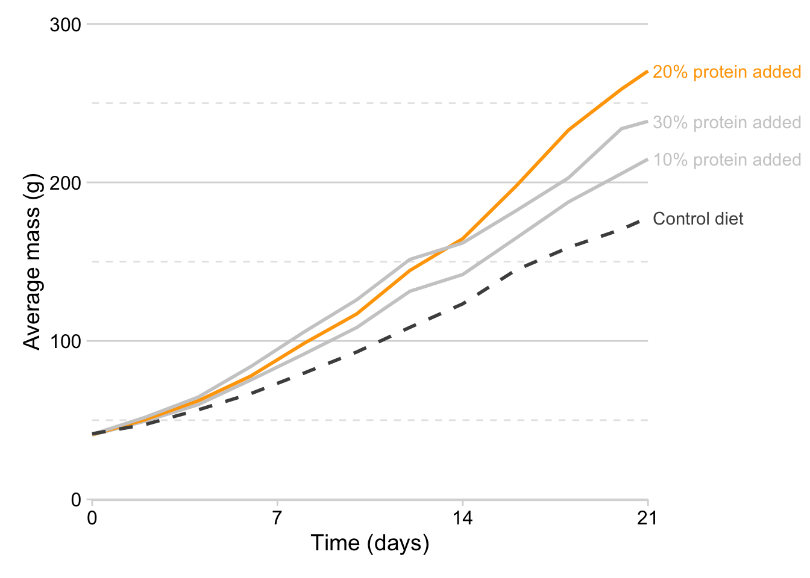
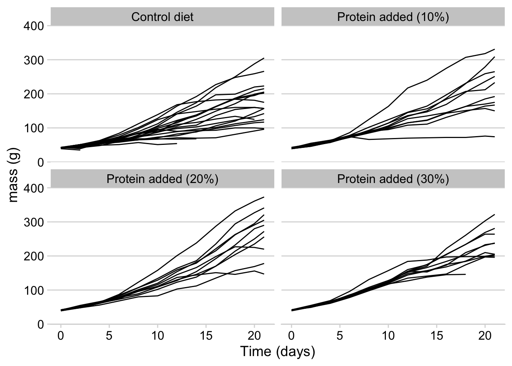

<!DOCTYPE html>
<html xmlns="http://www.w3.org/1999/xhtml" lang="en" xml:lang="en"><head>

<meta charset="utf-8">
<meta name="generator" content="quarto-1.3.353">

<meta name="viewport" content="width=device-width, initial-scale=1.0, user-scalable=yes">


<title>Data Science Workshop - 2&nbsp; Tidyverse</title>
<style>
code{white-space: pre-wrap;}
span.smallcaps{font-variant: small-caps;}
div.columns{display: flex; gap: min(4vw, 1.5em);}
div.column{flex: auto; overflow-x: auto;}
div.hanging-indent{margin-left: 1.5em; text-indent: -1.5em;}
ul.task-list{list-style: none;}
ul.task-list li input[type="checkbox"] {
  width: 0.8em;
  margin: 0 0.8em 0.2em -1em; /* quarto-specific, see https://github.com/quarto-dev/quarto-cli/issues/4556 */ 
  vertical-align: middle;
}
/* CSS for syntax highlighting */
pre > code.sourceCode { white-space: pre; position: relative; }
pre > code.sourceCode > span { display: inline-block; line-height: 1.25; }
pre > code.sourceCode > span:empty { height: 1.2em; }
.sourceCode { overflow: visible; }
code.sourceCode > span { color: inherit; text-decoration: inherit; }
div.sourceCode { margin: 1em 0; }
pre.sourceCode { margin: 0; }
@media screen {
div.sourceCode { overflow: auto; }
}
@media print {
pre > code.sourceCode { white-space: pre-wrap; }
pre > code.sourceCode > span { text-indent: -5em; padding-left: 5em; }
}
pre.numberSource code
  { counter-reset: source-line 0; }
pre.numberSource code > span
  { position: relative; left: -4em; counter-increment: source-line; }
pre.numberSource code > span > a:first-child::before
  { content: counter(source-line);
    position: relative; left: -1em; text-align: right; vertical-align: baseline;
    border: none; display: inline-block;
    -webkit-touch-callout: none; -webkit-user-select: none;
    -khtml-user-select: none; -moz-user-select: none;
    -ms-user-select: none; user-select: none;
    padding: 0 4px; width: 4em;
  }
pre.numberSource { margin-left: 3em;  padding-left: 4px; }
div.sourceCode
  {   }
@media screen {
pre > code.sourceCode > span > a:first-child::before { text-decoration: underline; }
}
/* CSS for citations */
div.csl-bib-body { }
div.csl-entry {
  clear: both;
}
.hanging-indent div.csl-entry {
  margin-left:2em;
  text-indent:-2em;
}
div.csl-left-margin {
  min-width:2em;
  float:left;
}
div.csl-right-inline {
  margin-left:2em;
  padding-left:1em;
}
div.csl-indent {
  margin-left: 2em;
}</style>


<script src="site_libs/quarto-nav/quarto-nav.js"></script>
<script src="site_libs/quarto-nav/headroom.min.js"></script>
<script src="site_libs/clipboard/clipboard.min.js"></script>
<script src="site_libs/quarto-search/autocomplete.umd.js"></script>
<script src="site_libs/quarto-search/fuse.min.js"></script>
<script src="site_libs/quarto-search/quarto-search.js"></script>
<meta name="quarto:offset" content="./">
<link href="./data_viz.html" rel="next">
<link href="./repro.html" rel="prev">
<script src="site_libs/quarto-html/quarto.js"></script>
<script src="site_libs/quarto-html/popper.min.js"></script>
<script src="site_libs/quarto-html/tippy.umd.min.js"></script>
<script src="site_libs/quarto-html/anchor.min.js"></script>
<link href="site_libs/quarto-html/tippy.css" rel="stylesheet">
<link href="site_libs/quarto-html/quarto-syntax-highlighting.css" rel="stylesheet" id="quarto-text-highlighting-styles">
<script src="site_libs/bootstrap/bootstrap.min.js"></script>
<link href="site_libs/bootstrap/bootstrap-icons.css" rel="stylesheet">
<link href="site_libs/bootstrap/bootstrap.min.css" rel="stylesheet" id="quarto-bootstrap" data-mode="light">
<script id="quarto-search-options" type="application/json">{
  "location": "sidebar",
  "copy-button": false,
  "collapse-after": 3,
  "panel-placement": "start",
  "type": "textbox",
  "limit": 20,
  "language": {
    "search-no-results-text": "No results",
    "search-matching-documents-text": "matching documents",
    "search-copy-link-title": "Copy link to search",
    "search-hide-matches-text": "Hide additional matches",
    "search-more-match-text": "more match in this document",
    "search-more-matches-text": "more matches in this document",
    "search-clear-button-title": "Clear",
    "search-detached-cancel-button-title": "Cancel",
    "search-submit-button-title": "Submit"
  }
}</script>

<script src="site_libs/kePrint-0.0.1/kePrint.js"></script>
<link href="site_libs/lightable-0.0.1/lightable.css" rel="stylesheet">


</head>

<body class="nav-sidebar floating">

<div id="quarto-search-results"></div>
  <header id="quarto-header" class="headroom fixed-top">
  <nav class="quarto-secondary-nav">
    <div class="container-fluid d-flex">
      <button type="button" class="quarto-btn-toggle btn" data-bs-toggle="collapse" data-bs-target="#quarto-sidebar,#quarto-sidebar-glass" aria-controls="quarto-sidebar" aria-expanded="false" aria-label="Toggle sidebar navigation" onclick="if (window.quartoToggleHeadroom) { window.quartoToggleHeadroom(); }">
        <i class="bi bi-layout-text-sidebar-reverse"></i>
      </button>
      <nav class="quarto-page-breadcrumbs" aria-label="breadcrumb"><ol class="breadcrumb"><li class="breadcrumb-item"><a href="./tidyverse.html"><span class="chapter-number">2</span>&nbsp; <span class="chapter-title">Tidyverse</span></a></li></ol></nav>
      <a class="flex-grow-1" role="button" data-bs-toggle="collapse" data-bs-target="#quarto-sidebar,#quarto-sidebar-glass" aria-controls="quarto-sidebar" aria-expanded="false" aria-label="Toggle sidebar navigation" onclick="if (window.quartoToggleHeadroom) { window.quartoToggleHeadroom(); }">      
      </a>
      <button type="button" class="btn quarto-search-button" aria-label="Search" onclick="window.quartoOpenSearch();">
        <i class="bi bi-search"></i>
      </button>
    </div>
  </nav>
</header>
<!-- content -->
<div id="quarto-content" class="quarto-container page-columns page-rows-contents page-layout-article">
<!-- sidebar -->
  <nav id="quarto-sidebar" class="sidebar collapse collapse-horizontal sidebar-navigation floating overflow-auto">
    <div class="pt-lg-2 mt-2 text-left sidebar-header">
    <div class="sidebar-title mb-0 py-0">
      <a href="./">Data Science Workshop</a> 
    </div>
      </div>
        <div class="mt-2 flex-shrink-0 align-items-center">
        <div class="sidebar-search">
        <div id="quarto-search" class="" title="Search"></div>
        </div>
        </div>
    <div class="sidebar-menu-container"> 
    <ul class="list-unstyled mt-1">
        <li class="sidebar-item">
  <div class="sidebar-item-container"> 
  <a href="./index.html" class="sidebar-item-text sidebar-link">
 <span class="menu-text">Welcome</span></a>
  </div>
</li>
        <li class="sidebar-item">
  <div class="sidebar-item-container"> 
  <a href="./repro.html" class="sidebar-item-text sidebar-link">
 <span class="menu-text"><span class="chapter-number">1</span>&nbsp; <span class="chapter-title">Reproducibility</span></span></a>
  </div>
</li>
        <li class="sidebar-item">
  <div class="sidebar-item-container"> 
  <a href="./tidyverse.html" class="sidebar-item-text sidebar-link active">
 <span class="menu-text"><span class="chapter-number">2</span>&nbsp; <span class="chapter-title">Tidyverse</span></span></a>
  </div>
</li>
        <li class="sidebar-item">
  <div class="sidebar-item-container"> 
  <a href="./data_viz.html" class="sidebar-item-text sidebar-link">
 <span class="menu-text"><span class="chapter-number">3</span>&nbsp; <span class="chapter-title">Data visualization</span></span></a>
  </div>
</li>
        <li class="sidebar-item">
  <div class="sidebar-item-container"> 
  <a href="./references.html" class="sidebar-item-text sidebar-link">
 <span class="menu-text">References</span></a>
  </div>
</li>
    </ul>
    </div>
</nav>
<div id="quarto-sidebar-glass" data-bs-toggle="collapse" data-bs-target="#quarto-sidebar,#quarto-sidebar-glass"></div>
<!-- margin-sidebar -->
    <div id="quarto-margin-sidebar" class="sidebar margin-sidebar">
        <nav id="TOC" role="doc-toc" class="toc-active">
    <h2 id="toc-title">Table of contents</h2>
   
  <ul>
  <li><a href="#why-use-the-the-tidyverse" id="toc-why-use-the-the-tidyverse" class="nav-link active" data-scroll-target="#why-use-the-the-tidyverse"><span class="header-section-number">2.1</span> Why use the the tidyverse?</a>
  <ul class="collapse">
  <li><a href="#tidyverse-style" id="toc-tidyverse-style" class="nav-link" data-scroll-target="#tidyverse-style"><span class="header-section-number">2.1.1</span> Tidyverse style</a></li>
  </ul></li>
  <li><a href="#tidy-data" id="toc-tidy-data" class="nav-link" data-scroll-target="#tidy-data"><span class="header-section-number">2.2</span> Tidy data</a></li>
  <li><a href="#introduction-to-data-wrangling" id="toc-introduction-to-data-wrangling" class="nav-link" data-scroll-target="#introduction-to-data-wrangling"><span class="header-section-number">2.3</span> Introduction to data wrangling</a>
  <ul class="collapse">
  <li><a href="#pipe" id="toc-pipe" class="nav-link" data-scroll-target="#pipe">Pipe <code>%&gt;%</code></a></li>
  </ul></li>
  <li><a href="#core-verbs-1" id="toc-core-verbs-1" class="nav-link" data-scroll-target="#core-verbs-1"><span class="header-section-number">2.4</span> Core verbs</a></li>
  <li><a href="#a-step-further" id="toc-a-step-further" class="nav-link" data-scroll-target="#a-step-further"><span class="header-section-number">2.5</span> A step further</a>
  <ul class="collapse">
  <li><a href="#tidy-alternative" id="toc-tidy-alternative" class="nav-link" data-scroll-target="#tidy-alternative"><span class="header-section-number">2.5.1</span> Tidy alternative</a></li>
  <li><a href="#take-it-to-the-next-level-with-purrr" id="toc-take-it-to-the-next-level-with-purrr" class="nav-link" data-scroll-target="#take-it-to-the-next-level-with-purrr"><span class="header-section-number">2.5.2</span> Take it to the next level with <code>purrr</code></a></li>
  <li><a href="#calculating-average-linear-growth-rate" id="toc-calculating-average-linear-growth-rate" class="nav-link" data-scroll-target="#calculating-average-linear-growth-rate"><span class="header-section-number">2.5.3</span> Calculating average linear growth rate</a></li>
  </ul></li>
  <li><a href="#tools-for-quick-clean-up" id="toc-tools-for-quick-clean-up" class="nav-link" data-scroll-target="#tools-for-quick-clean-up"><span class="header-section-number">2.6</span> Tools for quick clean up</a>
  <ul class="collapse">
  <li><a href="#styler-package" id="toc-styler-package" class="nav-link" data-scroll-target="#styler-package"><span class="header-section-number">2.6.1</span> Styler package</a></li>
  <li><a href="#janitor-package" id="toc-janitor-package" class="nav-link" data-scroll-target="#janitor-package"><span class="header-section-number">2.6.2</span> Janitor package</a></li>
  </ul></li>
  <li><a href="#tidy-data-1" id="toc-tidy-data-1" class="nav-link" data-scroll-target="#tidy-data-1"><span class="header-section-number">2.7</span> Tidy data</a>
  <ul class="collapse">
  <li><a href="#convert-billboard-to-tidy-data" id="toc-convert-billboard-to-tidy-data" class="nav-link" data-scroll-target="#convert-billboard-to-tidy-data">Convert billboard to tidy data</a></li>
  </ul></li>
  </ul>
</nav>
    </div>
<!-- main -->
<main class="content" id="quarto-document-content">

<header id="title-block-header" class="quarto-title-block default">
<div class="quarto-title">
<h1 class="title"><span id="sec-tidy" class="quarto-section-identifier"><span class="chapter-number">2</span>&nbsp; <span class="chapter-title">Tidyverse</span></span></h1>
</div>


<div class="quarto-title-meta">

    
  
    
  </div>
  

</header>

<p>The <a href="https://www.tidyverse.org/" target="_blank">tidyverse</a> is an inter-related set of packages that have a common grammar and syntax. It encompases We will not dive deeply into each topic, but instead, the workshop will introduce the core philosophy behind the tidyverse and some of the most used functions. Then, we will spend more time on some of the more advanced techniques that make the tidyverse powerful and exciting.</p>
<section id="why-use-the-the-tidyverse" class="level2" data-number="2.1">
<h2 data-number="2.1" class="anchored" data-anchor-id="why-use-the-the-tidyverse"><span class="header-section-number">2.1</span> Why use the the tidyverse?</h2>
<p>There are base R equivalents to most things that you can do in the tidyverse. So you might wonder why it is necessary, or even useful, to learn the tidyverse. I think that skepticism is fair, but here are a few reasons why I think you should not only learn the tidyverse, but make it a regular part of your workflow<a href="#fn1" class="footnote-ref" id="fnref1" role="doc-noteref"><sup>1</sup></a>.</p>
<ol type="1">
<li>As a data scientist, most of your time will be spent writing code, not waiting for code to execute. Therefore you should put more value the coding style that is easiest to write and understand. The tidyverse emphasizes human readable code.</li>
<li>Because of the flexible nature of some of the tidyverse functions, the tidyverse can make for more reproducible code, that is less likely to break if some of the underlying data has changed or been added too.</li>
<li>An increasing number of newly developed packages depend on the tidyverse. So you might as well embrace it.</li>
<li>You are already using it! If have made any figures in R, more likely than not, you are already used one tidyverse package, <code>ggplot2</code>.</li>
</ol>
<section id="tidyverse-style" class="level3" data-number="2.1.1">
<h3 data-number="2.1.1" class="anchored" data-anchor-id="tidyverse-style"><span class="header-section-number">2.1.1</span> Tidyverse style</h3>
<div class="callout callout-style-default callout-note callout-titled">
<div class="callout-header d-flex align-content-center">
<div class="callout-icon-container">
<i class="callout-icon"></i>
</div>
<div class="callout-title-container flex-fill">
<a href="https://cran.r-project.org/web/packages/tidyverse/vignettes/manifesto.html" target="_blank">The tidy tools manifesto</a>
</div>
</div>
<div class="callout-body-container callout-body">
<p>My favorite part of the tidyverse is the final principle in this manifesto:</p>
<blockquote class="blockquote">
<p>Design for humans. “Programs must be written for people to read, and only incidentally for machines to execute.” — Hal Abelson</p>
</blockquote>
</div>
</div>
<p>The tidyverse has a <a href="https://style.tidyverse.org/index.html" target="_blank">style guide</a> that gives advice on everything from file names, to syntax, spacing, and function names. Although following these rules isn’t at all necessary, it good coding practice to have a consistent coding style. It will make it easier for you to read and prevent you from making as many mistakes. This will also save you some time, because you will spend less time making those small decisions if you fully adopt a specific coding style. We will check out some tools for automating your style later at the end of the workshop!</p>
<blockquote class="blockquote">
<p>“Good coding style is like correct punctuation: you can manage without it, butitsuremakesthingseasiertoread.” <a href="#fn2" class="footnote-ref" id="fnref2" role="doc-noteref"><sup>2</sup></a></p>
</blockquote>
<div class="callout callout-style-default callout-tip callout-titled">
<div class="callout-header d-flex align-content-center">
<div class="callout-icon-container">
<i class="callout-icon"></i>
</div>
<div class="callout-title-container flex-fill">
Cheat sheets
</div>
</div>
<div class="callout-body-container callout-body">
<p>Tidyverse packages can help with many common tasks. Check out these cheat sheets for quick reference.</p>
<ul>
<li><a href="https://rstudio.github.io/cheatsheets/data-import.pdf" target="_blank">Data import</a></li>
<li><a href="https://rstudio.github.io/cheatsheets/tidyr.pdf" target="_blank">Data tidying</a></li>
<li><a href="https://www.rstudio.com/wp-content/uploads/2015/02/data-wrangling-cheatsheet.pdf" target="_blank">Data wrangling</a></li>
<li><a href="https://rstudio.github.io/cheatsheets/data-transformation.pdf" target="_blank">Data transformation</a></li>
<li><a href="https://rstudio.github.io/cheatsheets/data-visualization.pdf" target="_blank">Data visualization</a></li>
<li><a href="https://rstudio.github.io/cheatsheets/purrr.pdf" target="_blank">Functional programming</a></li>
<li><a href="https://rstudio.github.io/cheatsheets/strings.pdf" target="_blank">Strings</a></li>
<li><a href="https://rstudio.github.io/cheatsheets/factors.pdf" target="_blank">Factors</a></li>
</ul>
</div>
</div>
<div class="cell">
<div class="sourceCode cell-code" id="cb1"><pre class="sourceCode r code-with-copy"><code class="sourceCode r"><span id="cb1-1"><a href="#cb1-1" aria-hidden="true" tabindex="-1"></a><span class="co"># Load library</span></span>
<span id="cb1-2"><a href="#cb1-2" aria-hidden="true" tabindex="-1"></a><span class="fu">library</span>(tidyverse)</span></code><button title="Copy to Clipboard" class="code-copy-button"><i class="bi"></i></button></pre></div>
<div class="cell-output cell-output-stderr">
<pre><code>── Attaching core tidyverse packages ──────────────────────── tidyverse 2.0.0 ──
✔ dplyr     1.1.0     ✔ readr     2.1.4
✔ forcats   1.0.0     ✔ stringr   1.5.0
✔ ggplot2   3.4.3     ✔ tibble    3.1.8
✔ lubridate 1.9.2     ✔ tidyr     1.3.0
✔ purrr     1.0.1     
── Conflicts ────────────────────────────────────────── tidyverse_conflicts() ──
✖ dplyr::filter() masks stats::filter()
✖ dplyr::lag()    masks stats::lag()
ℹ Use the ]8;;http://conflicted.r-lib.org/conflicted package]8;; to force all conflicts to become errors</code></pre>
</div>
</div>
<div class="callout callout-style-default callout-tip callout-titled">
<div class="callout-header d-flex align-content-center">
<div class="callout-icon-container">
<i class="callout-icon"></i>
</div>
<div class="callout-title-container flex-fill">
<code>library(tidyverse)</code>
</div>
</div>
<div class="callout-body-container callout-body">
<p>Rather than loading each package individually – I often just load all of the core packages with the convenient <code>library(tidyverse)</code><a href="#fn3" class="footnote-ref" id="fnref3" role="doc-noteref"><sup>3</sup></a>. Most of my scripts are dependent on at least three of the core packages, so it is easier to just have them all included. But you could load each individually.</p>
</div>
</div>
</section>
</section>
<section id="tidy-data" class="level2" data-number="2.2">
<h2 data-number="2.2" class="anchored" data-anchor-id="tidy-data"><span class="header-section-number">2.2</span> Tidy data</h2>
<p>The tidyverse gets its name from the type of data that it is designed to interact with – <strong>tidy data</strong>. So let’s quickly define <a href="https://cran.r-project.org/web/packages/tidyr/vignettes/tidy-data.html" target="_blank">tidy data</a><a href="#fn4" class="footnote-ref" id="fnref4" role="doc-noteref"><sup>4</sup></a>.</p>
<div class="callout callout-style-default callout-tip callout-titled">
<div class="callout-header d-flex align-content-center">
<div class="callout-icon-container">
<i class="callout-icon"></i>
</div>
<div class="callout-title-container flex-fill">
Tidy data – definition
</div>
</div>
<div class="callout-body-container callout-body">
<ol type="1">
<li>Every column is a variable.</li>
<li>Every row is an observation.</li>
<li>Every cell is a single value.</li>
</ol>
</div>
</div>
<p>But that definition is a bit abstract – especially if you have never thought about whether data is messy or tidy before – so let’s try a practical example.</p>
<div class="callout callout-style-simple callout-note no-icon">
<div class="callout-body d-flex">
<div class="callout-icon-container">
<i class="callout-icon no-icon"></i>
</div>
<div class="callout-body-container">
<p>Imagine over the course of several weeks, you measure the height of a few plants. If you record the data by hand or in a spread sheet. It is likely to look something like the below data.</p>
</div>
</div>
</div>
<div class="cell">
<details>
<summary>Code</summary>
<div class="sourceCode cell-code" id="cb3"><pre class="sourceCode r code-with-copy"><code class="sourceCode r"><span id="cb3-1"><a href="#cb3-1" aria-hidden="true" tabindex="-1"></a><span class="co"># Number of plants</span></span>
<span id="cb3-2"><a href="#cb3-2" aria-hidden="true" tabindex="-1"></a>n <span class="ot">&lt;-</span> <span class="dv">10</span></span>
<span id="cb3-3"><a href="#cb3-3" aria-hidden="true" tabindex="-1"></a></span>
<span id="cb3-4"><a href="#cb3-4" aria-hidden="true" tabindex="-1"></a><span class="co"># Make up some random data</span></span>
<span id="cb3-5"><a href="#cb3-5" aria-hidden="true" tabindex="-1"></a>dat <span class="ot">&lt;-</span> <span class="fu">tibble</span>(</span>
<span id="cb3-6"><a href="#cb3-6" aria-hidden="true" tabindex="-1"></a>  <span class="at">plant_id =</span> <span class="dv">1</span><span class="sc">:</span>n,</span>
<span id="cb3-7"><a href="#cb3-7" aria-hidden="true" tabindex="-1"></a>  <span class="at">treatment =</span> <span class="fu">c</span>(<span class="fu">rep</span>(<span class="st">"control"</span>, n<span class="sc">/</span><span class="dv">2</span>), <span class="fu">rep</span>(<span class="st">"treatment"</span>, n<span class="sc">/</span><span class="dv">2</span>)),</span>
<span id="cb3-8"><a href="#cb3-8" aria-hidden="true" tabindex="-1"></a>  <span class="at">week_1 =</span> <span class="fu">rnorm</span>(n, <span class="at">mean =</span> <span class="dv">10</span>, <span class="at">sd =</span> <span class="dv">3</span>),</span>
<span id="cb3-9"><a href="#cb3-9" aria-hidden="true" tabindex="-1"></a>  <span class="at">week_2 =</span> week_1<span class="sc">*</span><span class="fu">runif</span>(n, <span class="at">min =</span> <span class="dv">1</span>, <span class="at">max =</span> <span class="fl">1.5</span>),</span>
<span id="cb3-10"><a href="#cb3-10" aria-hidden="true" tabindex="-1"></a>  <span class="at">week_3 =</span> week_2<span class="sc">*</span><span class="fu">runif</span>(n, <span class="at">min =</span> <span class="dv">1</span>, <span class="at">max =</span> <span class="fl">1.5</span>),</span>
<span id="cb3-11"><a href="#cb3-11" aria-hidden="true" tabindex="-1"></a>  <span class="at">week_4 =</span> week_3<span class="sc">*</span><span class="fu">runif</span>(n, <span class="at">min =</span> <span class="dv">1</span>, <span class="at">max =</span> <span class="fl">1.5</span>),</span>
<span id="cb3-12"><a href="#cb3-12" aria-hidden="true" tabindex="-1"></a>  <span class="at">week_5 =</span> week_4<span class="sc">*</span><span class="fu">runif</span>(n, <span class="at">min =</span> <span class="dv">1</span>, <span class="at">max =</span> <span class="fl">1.5</span>)</span>
<span id="cb3-13"><a href="#cb3-13" aria-hidden="true" tabindex="-1"></a>  ) <span class="sc">|&gt;</span> </span>
<span id="cb3-14"><a href="#cb3-14" aria-hidden="true" tabindex="-1"></a>  <span class="fu">mutate_if</span>(is.numeric, round, <span class="dv">1</span>)</span>
<span id="cb3-15"><a href="#cb3-15" aria-hidden="true" tabindex="-1"></a></span>
<span id="cb3-16"><a href="#cb3-16" aria-hidden="true" tabindex="-1"></a><span class="co"># Print out pretty table</span></span>
<span id="cb3-17"><a href="#cb3-17" aria-hidden="true" tabindex="-1"></a>dat <span class="sc">|&gt;</span> </span>
<span id="cb3-18"><a href="#cb3-18" aria-hidden="true" tabindex="-1"></a>  kableExtra<span class="sc">::</span><span class="fu">kable</span>(<span class="st">"html"</span>) <span class="sc">|&gt;</span> </span>
<span id="cb3-19"><a href="#cb3-19" aria-hidden="true" tabindex="-1"></a>  kableExtra<span class="sc">::</span><span class="fu">kable_styling</span>(<span class="st">"striped"</span>)</span></code><button title="Copy to Clipboard" class="code-copy-button"><i class="bi"></i></button></pre></div>
</details>
<div class="cell-output-display">
<table class="table table-striped table-sm small" data-quarto-postprocess="true">
<thead>
<tr class="header">
<th style="text-align: right;" data-quarto-table-cell-role="th">plant_id</th>
<th style="text-align: left;" data-quarto-table-cell-role="th">treatment</th>
<th style="text-align: right;" data-quarto-table-cell-role="th">week_1</th>
<th style="text-align: right;" data-quarto-table-cell-role="th">week_2</th>
<th style="text-align: right;" data-quarto-table-cell-role="th">week_3</th>
<th style="text-align: right;" data-quarto-table-cell-role="th">week_4</th>
<th style="text-align: right;" data-quarto-table-cell-role="th">week_5</th>
</tr>
</thead>
<tbody>
<tr class="odd">
<td style="text-align: right;">1</td>
<td style="text-align: left;">control</td>
<td style="text-align: right;">5.6</td>
<td style="text-align: right;">6.5</td>
<td style="text-align: right;">6.5</td>
<td style="text-align: right;">9.4</td>
<td style="text-align: right;">12.6</td>
</tr>
<tr class="even">
<td style="text-align: right;">2</td>
<td style="text-align: left;">control</td>
<td style="text-align: right;">7.8</td>
<td style="text-align: right;">8.7</td>
<td style="text-align: right;">10.0</td>
<td style="text-align: right;">14.8</td>
<td style="text-align: right;">21.9</td>
</tr>
<tr class="odd">
<td style="text-align: right;">3</td>
<td style="text-align: left;">control</td>
<td style="text-align: right;">7.4</td>
<td style="text-align: right;">10.2</td>
<td style="text-align: right;">14.2</td>
<td style="text-align: right;">19.9</td>
<td style="text-align: right;">28.8</td>
</tr>
<tr class="even">
<td style="text-align: right;">4</td>
<td style="text-align: left;">control</td>
<td style="text-align: right;">5.9</td>
<td style="text-align: right;">6.8</td>
<td style="text-align: right;">8.5</td>
<td style="text-align: right;">9.1</td>
<td style="text-align: right;">12.1</td>
</tr>
<tr class="odd">
<td style="text-align: right;">5</td>
<td style="text-align: left;">control</td>
<td style="text-align: right;">12.3</td>
<td style="text-align: right;">13.0</td>
<td style="text-align: right;">13.0</td>
<td style="text-align: right;">19.2</td>
<td style="text-align: right;">23.4</td>
</tr>
<tr class="even">
<td style="text-align: right;">6</td>
<td style="text-align: left;">treatment</td>
<td style="text-align: right;">8.7</td>
<td style="text-align: right;">11.6</td>
<td style="text-align: right;">12.9</td>
<td style="text-align: right;">13.8</td>
<td style="text-align: right;">16.6</td>
</tr>
<tr class="odd">
<td style="text-align: right;">7</td>
<td style="text-align: left;">treatment</td>
<td style="text-align: right;">10.7</td>
<td style="text-align: right;">14.9</td>
<td style="text-align: right;">17.3</td>
<td style="text-align: right;">20.8</td>
<td style="text-align: right;">25.2</td>
</tr>
<tr class="even">
<td style="text-align: right;">8</td>
<td style="text-align: left;">treatment</td>
<td style="text-align: right;">13.6</td>
<td style="text-align: right;">16.4</td>
<td style="text-align: right;">16.7</td>
<td style="text-align: right;">20.8</td>
<td style="text-align: right;">27.7</td>
</tr>
<tr class="odd">
<td style="text-align: right;">9</td>
<td style="text-align: left;">treatment</td>
<td style="text-align: right;">13.5</td>
<td style="text-align: right;">16.9</td>
<td style="text-align: right;">20.3</td>
<td style="text-align: right;">30.0</td>
<td style="text-align: right;">40.1</td>
</tr>
<tr class="even">
<td style="text-align: right;">10</td>
<td style="text-align: left;">treatment</td>
<td style="text-align: right;">12.0</td>
<td style="text-align: right;">16.0</td>
<td style="text-align: right;">21.8</td>
<td style="text-align: right;">24.4</td>
<td style="text-align: right;">34.2</td>
</tr>
</tbody>
</table>


</div>
</div>
<p>The above is messy data. The <em>week</em> variable is hidden in the column names and for each row there are as many observations as there are weeks (<em>i.e.</em>, in this case there are five observations in each row). This way is probably how you naturally record data.</p>
<p>But in reality, it is better</p>
<div class="cell">
<details>
<summary>Code</summary>
<div class="sourceCode cell-code" id="cb4"><pre class="sourceCode r code-with-copy"><code class="sourceCode r"><span id="cb4-1"><a href="#cb4-1" aria-hidden="true" tabindex="-1"></a><span class="co"># Pivot data to tidy format and then convert week to numeric</span></span>
<span id="cb4-2"><a href="#cb4-2" aria-hidden="true" tabindex="-1"></a>dat_long <span class="ot">&lt;-</span> dat <span class="sc">|&gt;</span></span>
<span id="cb4-3"><a href="#cb4-3" aria-hidden="true" tabindex="-1"></a>  <span class="fu">pivot_longer</span>(<span class="fu">contains</span>(<span class="st">"week"</span>),</span>
<span id="cb4-4"><a href="#cb4-4" aria-hidden="true" tabindex="-1"></a>               <span class="at">names_to =</span> <span class="st">"week"</span>,</span>
<span id="cb4-5"><a href="#cb4-5" aria-hidden="true" tabindex="-1"></a>               <span class="at">values_to =</span> <span class="st">"height_cm"</span>) <span class="sc">|&gt;</span> </span>
<span id="cb4-6"><a href="#cb4-6" aria-hidden="true" tabindex="-1"></a>  <span class="fu">mutate</span>(<span class="at">week =</span> <span class="fu">as.numeric</span>(<span class="fu">str_remove_all</span>(week, <span class="st">"week_"</span>)))</span>
<span id="cb4-7"><a href="#cb4-7" aria-hidden="true" tabindex="-1"></a></span>
<span id="cb4-8"><a href="#cb4-8" aria-hidden="true" tabindex="-1"></a><span class="co"># Print out pretty table</span></span>
<span id="cb4-9"><a href="#cb4-9" aria-hidden="true" tabindex="-1"></a>dat_long <span class="sc">|&gt;</span> </span>
<span id="cb4-10"><a href="#cb4-10" aria-hidden="true" tabindex="-1"></a>  kableExtra<span class="sc">::</span><span class="fu">kable</span>(<span class="st">"html"</span>) <span class="sc">|&gt;</span> </span>
<span id="cb4-11"><a href="#cb4-11" aria-hidden="true" tabindex="-1"></a>  kableExtra<span class="sc">::</span><span class="fu">kable_styling</span>(<span class="st">"striped"</span>) <span class="sc">|&gt;</span> </span>
<span id="cb4-12"><a href="#cb4-12" aria-hidden="true" tabindex="-1"></a>  kableExtra<span class="sc">::</span><span class="fu">scroll_box</span>(<span class="at">height =</span> <span class="st">"500px"</span>)</span></code><button title="Copy to Clipboard" class="code-copy-button"><i class="bi"></i></button></pre></div>
</details>
<div class="cell-output-display">
<div style="border: 1px solid #ddd; padding: 0px; overflow-y: scroll; height:500px; ">
<table class="table table-striped table-sm small" data-quarto-postprocess="true">
<thead>
<tr class="header">
<th data-quarto-table-cell-role="th" style="text-align: right; position: sticky; top: 0; background-color: #FFFFFF;">plant_id</th>
<th data-quarto-table-cell-role="th" style="text-align: left; position: sticky; top: 0; background-color: #FFFFFF;">treatment</th>
<th data-quarto-table-cell-role="th" style="text-align: right; position: sticky; top: 0; background-color: #FFFFFF;">week</th>
<th data-quarto-table-cell-role="th" style="text-align: right; position: sticky; top: 0; background-color: #FFFFFF;">height_cm</th>
</tr>
</thead>
<tbody>
<tr class="odd">
<td style="text-align: right;">1</td>
<td style="text-align: left;">control</td>
<td style="text-align: right;">1</td>
<td style="text-align: right;">5.6</td>
</tr>
<tr class="even">
<td style="text-align: right;">1</td>
<td style="text-align: left;">control</td>
<td style="text-align: right;">2</td>
<td style="text-align: right;">6.5</td>
</tr>
<tr class="odd">
<td style="text-align: right;">1</td>
<td style="text-align: left;">control</td>
<td style="text-align: right;">3</td>
<td style="text-align: right;">6.5</td>
</tr>
<tr class="even">
<td style="text-align: right;">1</td>
<td style="text-align: left;">control</td>
<td style="text-align: right;">4</td>
<td style="text-align: right;">9.4</td>
</tr>
<tr class="odd">
<td style="text-align: right;">1</td>
<td style="text-align: left;">control</td>
<td style="text-align: right;">5</td>
<td style="text-align: right;">12.6</td>
</tr>
<tr class="even">
<td style="text-align: right;">2</td>
<td style="text-align: left;">control</td>
<td style="text-align: right;">1</td>
<td style="text-align: right;">7.8</td>
</tr>
<tr class="odd">
<td style="text-align: right;">2</td>
<td style="text-align: left;">control</td>
<td style="text-align: right;">2</td>
<td style="text-align: right;">8.7</td>
</tr>
<tr class="even">
<td style="text-align: right;">2</td>
<td style="text-align: left;">control</td>
<td style="text-align: right;">3</td>
<td style="text-align: right;">10.0</td>
</tr>
<tr class="odd">
<td style="text-align: right;">2</td>
<td style="text-align: left;">control</td>
<td style="text-align: right;">4</td>
<td style="text-align: right;">14.8</td>
</tr>
<tr class="even">
<td style="text-align: right;">2</td>
<td style="text-align: left;">control</td>
<td style="text-align: right;">5</td>
<td style="text-align: right;">21.9</td>
</tr>
<tr class="odd">
<td style="text-align: right;">3</td>
<td style="text-align: left;">control</td>
<td style="text-align: right;">1</td>
<td style="text-align: right;">7.4</td>
</tr>
<tr class="even">
<td style="text-align: right;">3</td>
<td style="text-align: left;">control</td>
<td style="text-align: right;">2</td>
<td style="text-align: right;">10.2</td>
</tr>
<tr class="odd">
<td style="text-align: right;">3</td>
<td style="text-align: left;">control</td>
<td style="text-align: right;">3</td>
<td style="text-align: right;">14.2</td>
</tr>
<tr class="even">
<td style="text-align: right;">3</td>
<td style="text-align: left;">control</td>
<td style="text-align: right;">4</td>
<td style="text-align: right;">19.9</td>
</tr>
<tr class="odd">
<td style="text-align: right;">3</td>
<td style="text-align: left;">control</td>
<td style="text-align: right;">5</td>
<td style="text-align: right;">28.8</td>
</tr>
<tr class="even">
<td style="text-align: right;">4</td>
<td style="text-align: left;">control</td>
<td style="text-align: right;">1</td>
<td style="text-align: right;">5.9</td>
</tr>
<tr class="odd">
<td style="text-align: right;">4</td>
<td style="text-align: left;">control</td>
<td style="text-align: right;">2</td>
<td style="text-align: right;">6.8</td>
</tr>
<tr class="even">
<td style="text-align: right;">4</td>
<td style="text-align: left;">control</td>
<td style="text-align: right;">3</td>
<td style="text-align: right;">8.5</td>
</tr>
<tr class="odd">
<td style="text-align: right;">4</td>
<td style="text-align: left;">control</td>
<td style="text-align: right;">4</td>
<td style="text-align: right;">9.1</td>
</tr>
<tr class="even">
<td style="text-align: right;">4</td>
<td style="text-align: left;">control</td>
<td style="text-align: right;">5</td>
<td style="text-align: right;">12.1</td>
</tr>
<tr class="odd">
<td style="text-align: right;">5</td>
<td style="text-align: left;">control</td>
<td style="text-align: right;">1</td>
<td style="text-align: right;">12.3</td>
</tr>
<tr class="even">
<td style="text-align: right;">5</td>
<td style="text-align: left;">control</td>
<td style="text-align: right;">2</td>
<td style="text-align: right;">13.0</td>
</tr>
<tr class="odd">
<td style="text-align: right;">5</td>
<td style="text-align: left;">control</td>
<td style="text-align: right;">3</td>
<td style="text-align: right;">13.0</td>
</tr>
<tr class="even">
<td style="text-align: right;">5</td>
<td style="text-align: left;">control</td>
<td style="text-align: right;">4</td>
<td style="text-align: right;">19.2</td>
</tr>
<tr class="odd">
<td style="text-align: right;">5</td>
<td style="text-align: left;">control</td>
<td style="text-align: right;">5</td>
<td style="text-align: right;">23.4</td>
</tr>
<tr class="even">
<td style="text-align: right;">6</td>
<td style="text-align: left;">treatment</td>
<td style="text-align: right;">1</td>
<td style="text-align: right;">8.7</td>
</tr>
<tr class="odd">
<td style="text-align: right;">6</td>
<td style="text-align: left;">treatment</td>
<td style="text-align: right;">2</td>
<td style="text-align: right;">11.6</td>
</tr>
<tr class="even">
<td style="text-align: right;">6</td>
<td style="text-align: left;">treatment</td>
<td style="text-align: right;">3</td>
<td style="text-align: right;">12.9</td>
</tr>
<tr class="odd">
<td style="text-align: right;">6</td>
<td style="text-align: left;">treatment</td>
<td style="text-align: right;">4</td>
<td style="text-align: right;">13.8</td>
</tr>
<tr class="even">
<td style="text-align: right;">6</td>
<td style="text-align: left;">treatment</td>
<td style="text-align: right;">5</td>
<td style="text-align: right;">16.6</td>
</tr>
<tr class="odd">
<td style="text-align: right;">7</td>
<td style="text-align: left;">treatment</td>
<td style="text-align: right;">1</td>
<td style="text-align: right;">10.7</td>
</tr>
<tr class="even">
<td style="text-align: right;">7</td>
<td style="text-align: left;">treatment</td>
<td style="text-align: right;">2</td>
<td style="text-align: right;">14.9</td>
</tr>
<tr class="odd">
<td style="text-align: right;">7</td>
<td style="text-align: left;">treatment</td>
<td style="text-align: right;">3</td>
<td style="text-align: right;">17.3</td>
</tr>
<tr class="even">
<td style="text-align: right;">7</td>
<td style="text-align: left;">treatment</td>
<td style="text-align: right;">4</td>
<td style="text-align: right;">20.8</td>
</tr>
<tr class="odd">
<td style="text-align: right;">7</td>
<td style="text-align: left;">treatment</td>
<td style="text-align: right;">5</td>
<td style="text-align: right;">25.2</td>
</tr>
<tr class="even">
<td style="text-align: right;">8</td>
<td style="text-align: left;">treatment</td>
<td style="text-align: right;">1</td>
<td style="text-align: right;">13.6</td>
</tr>
<tr class="odd">
<td style="text-align: right;">8</td>
<td style="text-align: left;">treatment</td>
<td style="text-align: right;">2</td>
<td style="text-align: right;">16.4</td>
</tr>
<tr class="even">
<td style="text-align: right;">8</td>
<td style="text-align: left;">treatment</td>
<td style="text-align: right;">3</td>
<td style="text-align: right;">16.7</td>
</tr>
<tr class="odd">
<td style="text-align: right;">8</td>
<td style="text-align: left;">treatment</td>
<td style="text-align: right;">4</td>
<td style="text-align: right;">20.8</td>
</tr>
<tr class="even">
<td style="text-align: right;">8</td>
<td style="text-align: left;">treatment</td>
<td style="text-align: right;">5</td>
<td style="text-align: right;">27.7</td>
</tr>
<tr class="odd">
<td style="text-align: right;">9</td>
<td style="text-align: left;">treatment</td>
<td style="text-align: right;">1</td>
<td style="text-align: right;">13.5</td>
</tr>
<tr class="even">
<td style="text-align: right;">9</td>
<td style="text-align: left;">treatment</td>
<td style="text-align: right;">2</td>
<td style="text-align: right;">16.9</td>
</tr>
<tr class="odd">
<td style="text-align: right;">9</td>
<td style="text-align: left;">treatment</td>
<td style="text-align: right;">3</td>
<td style="text-align: right;">20.3</td>
</tr>
<tr class="even">
<td style="text-align: right;">9</td>
<td style="text-align: left;">treatment</td>
<td style="text-align: right;">4</td>
<td style="text-align: right;">30.0</td>
</tr>
<tr class="odd">
<td style="text-align: right;">9</td>
<td style="text-align: left;">treatment</td>
<td style="text-align: right;">5</td>
<td style="text-align: right;">40.1</td>
</tr>
<tr class="even">
<td style="text-align: right;">10</td>
<td style="text-align: left;">treatment</td>
<td style="text-align: right;">1</td>
<td style="text-align: right;">12.0</td>
</tr>
<tr class="odd">
<td style="text-align: right;">10</td>
<td style="text-align: left;">treatment</td>
<td style="text-align: right;">2</td>
<td style="text-align: right;">16.0</td>
</tr>
<tr class="even">
<td style="text-align: right;">10</td>
<td style="text-align: left;">treatment</td>
<td style="text-align: right;">3</td>
<td style="text-align: right;">21.8</td>
</tr>
<tr class="odd">
<td style="text-align: right;">10</td>
<td style="text-align: left;">treatment</td>
<td style="text-align: right;">4</td>
<td style="text-align: right;">24.4</td>
</tr>
<tr class="even">
<td style="text-align: right;">10</td>
<td style="text-align: left;">treatment</td>
<td style="text-align: right;">5</td>
<td style="text-align: right;">34.2</td>
</tr>
</tbody>
</table>
</div>

</div>
</div>
<div class="callout callout-style-default callout-tip callout-titled">
<div class="callout-header d-flex align-content-center">
<div class="callout-icon-container">
<i class="callout-icon"></i>
</div>
<div class="callout-title-container flex-fill">
<strong>BAM</strong>! That is tidy data.
</div>
</div>
<div class="callout-body-container callout-body">
<ol type="1">
<li>Every column is a variable – plant_id, treatment, time, height.</li>
<li>Every row is an observation – a height measurement on a single plant.</li>
<li>Every cell is a single value.</li>
</ol>
<p>For right now, no need to worry about the code used to convert the original data to tidy format. Although if you are curious, take a look under the hood. We will return to this later in the workshop.</p>
</div>
</div>
</section>
<section id="introduction-to-data-wrangling" class="level2" data-number="2.3">
<h2 data-number="2.3" class="anchored" data-anchor-id="introduction-to-data-wrangling"><span class="header-section-number">2.3</span> Introduction to data wrangling</h2>
<p>The package dplyr has a few core functions (or verbs) that are built to work on tidy data. We will check out a few briefly. But before we do, let’s introduce the sometimes confusing, but often useful, pipe operator.</p>
<div class="callout callout-style-default callout-tip callout-titled">
<div class="callout-header d-flex align-content-center" data-bs-toggle="collapse" data-bs-target=".callout-6-contents" aria-controls="callout-6" aria-expanded="false" aria-label="Toggle callout">
<div class="callout-icon-container">
<i class="callout-icon"></i>
</div>
<div class="callout-title-container flex-fill">
<a href="https://cran.r-project.org/web/packages/dplyr/vignettes/dplyr.html" target="_blank">Core verbs</a>
</div>
<div class="callout-btn-toggle d-inline-block border-0 py-1 ps-1 pe-0 float-end"><i class="callout-toggle"></i></div>
</div>
<div id="callout-6" class="callout-6-contents callout-collapse collapse">
<div class="callout-body-container callout-body">
<section id="rows" class="level4 unnumbered">
<h4 class="unnumbered anchored" data-anchor-id="rows">Rows</h4>
<ul>
<li><code>filter()</code> chooses rows based on column values.</li>
<li><code>slice()</code> chooses rows based on location.</li>
<li><code>arrange()</code> changes the order of the rows.</li>
</ul>
</section>
<section id="columns" class="level4 unnumbered">
<h4 class="unnumbered anchored" data-anchor-id="columns">Columns</h4>
<ul>
<li><code>select()</code> changes whether or not a column is included.</li>
<li><code>rename()</code> changes the name of columns.</li>
<li><code>mutate()</code> changes the values of columns and creates new columns.</li>
<li><code>relocate()</code> changes the order of the columns.</li>
</ul>
</section>
<section id="groups-of-rows" class="level4 unnumbered">
<h4 class="unnumbered anchored" data-anchor-id="groups-of-rows">Groups of rows</h4>
<ul>
<li><code>summarise()</code> collapses a group into a single row.</li>
</ul>
</section>
</div>
</div>
</div>
<section id="pipe" class="level3 unnumbered">
<h3 class="unnumbered anchored" data-anchor-id="pipe">Pipe <code>%&gt;%</code></h3>
<p>The pipe operator is a more human-readable alternative to nesting function calls within each other. As the <a href="https://magrittr.tidyverse.org/index.html" target="_blank"><code>magrittr</code></a> vignette explains, it makes function calls more naturally reflect the true order of operations. Here are the abstract examples of using a pipe.</p>
<ul>
<li><code>x %&gt;% f</code> is equivalent to <code>f(x)</code></li>
<li><code>x %&gt;% f(y)</code> is equivalent to <code>f(x, y)</code></li>
<li><code>x %&gt;% f %&gt;% g %&gt;% h</code> is equivalent to <code>h(g(f(x)))</code></li>
</ul>
<p>The argument placeholder<a href="#fn5" class="footnote-ref" id="fnref5" role="doc-noteref"><sup>5</sup></a></p>
<ul>
<li><code>x %&gt;% f(y, .)</code> is equivalent to <code>f(y, x)</code></li>
<li><code>x %&gt;% f(y, z = .)</code> is equivalent to <code>f(y, z = x)</code></li>
</ul>
<div class="callout callout-style-default callout-warning callout-titled">
<div class="callout-header d-flex align-content-center" data-bs-toggle="collapse" data-bs-target=".callout-7-contents" aria-controls="callout-7" aria-expanded="false" aria-label="Toggle callout">
<div class="callout-icon-container">
<i class="callout-icon"></i>
</div>
<div class="callout-title-container flex-fill">
<code>|&gt;</code> native pipe operator
</div>
<div class="callout-btn-toggle d-inline-block border-0 py-1 ps-1 pe-0 float-end"><i class="callout-toggle"></i></div>
</div>
<div id="callout-7" class="callout-7-contents callout-collapse collapse">
<div class="callout-body-container callout-body">
<p>In new versions of R (&gt; 4.1.0), there is now a native pipe operator (<code>|&gt;</code>) that comes within the syntax of R itself, rather than being loaded as a part of a separate package.</p>
<p>Although they are largely the same, there are some meaningful differences between the two. These two articles from the <a href="https://www.tidyverse.org/blog/2023/04/base-vs-magrittr-pipe/" target="_blank">tidyverse</a> and <a href="https://towardsdatascience.com/understanding-the-native-r-pipe-98dea6d8b61b" target="_blank">Isabella Velásquez</a> do a good job of explaining the differences relevant differences.</p>
<p>I have started just using the native pipe (<code>|&gt;</code>) for almost all cases now. Trivially because it just looks cleaner. But also because using the native pipe allows you to use a pipe without explicitly loading the mattingr package. For example <code>iris |&gt; head()</code> just works, where if you instead had used the magrittr pipe (<code>%&gt;%</code>), but not loaded the magrittr package (or the whole tidverse), you would get an error.</p>
<p>I will use the native pipe in almost all instances for the rest of this workshop.</p>
</div>
</div>
</div>
<section id="a-fun-example-from-r-for-data-science" class="level4" data-number="2.3.0.1">
<h4 data-number="2.3.0.1" class="anchored" data-anchor-id="a-fun-example-from-r-for-data-science"><span class="header-section-number">2.3.0.1</span> A fun example from <a href="https://r4ds.had.co.nz/pipes.html" target="_blank">R for data science</a></h4>
<div class="cell">
<div class="sourceCode cell-code" id="cb5"><pre class="sourceCode r code-with-copy"><code class="sourceCode r"><span id="cb5-1"><a href="#cb5-1" aria-hidden="true" tabindex="-1"></a><span class="co"># As a series of statements with intermediate objects</span></span>
<span id="cb5-2"><a href="#cb5-2" aria-hidden="true" tabindex="-1"></a>foo_foo <span class="ot">&lt;-</span> <span class="fu">little_bunny</span>()</span>
<span id="cb5-3"><a href="#cb5-3" aria-hidden="true" tabindex="-1"></a>foo_foo_1 <span class="ot">&lt;-</span> <span class="fu">hop</span>(foo_foo, <span class="at">through =</span> forest)</span>
<span id="cb5-4"><a href="#cb5-4" aria-hidden="true" tabindex="-1"></a>foo_foo_2 <span class="ot">&lt;-</span> <span class="fu">scoop</span>(foo_foo_1, <span class="at">up =</span> field_mice)</span>
<span id="cb5-5"><a href="#cb5-5" aria-hidden="true" tabindex="-1"></a>foo_foo_3 <span class="ot">&lt;-</span> <span class="fu">bop</span>(foo_foo_2, <span class="at">on =</span> head)</span></code><button title="Copy to Clipboard" class="code-copy-button"><i class="bi"></i></button></pre></div>
</div>
<div class="cell">
<div class="sourceCode cell-code" id="cb6"><pre class="sourceCode r code-with-copy"><code class="sourceCode r"><span id="cb6-1"><a href="#cb6-1" aria-hidden="true" tabindex="-1"></a><span class="co"># As a bunch of nested function calls</span></span>
<span id="cb6-2"><a href="#cb6-2" aria-hidden="true" tabindex="-1"></a>foo_foo <span class="ot">&lt;-</span> <span class="fu">bop</span>(<span class="fu">scoop</span>(<span class="fu">hop</span>(<span class="fu">little_bunny</span>(), <span class="at">through =</span> forest), <span class="at">up =</span> field_mice), <span class="at">on =</span> head)</span></code><button title="Copy to Clipboard" class="code-copy-button"><i class="bi"></i></button></pre></div>
</div>
<div class="cell">
<div class="sourceCode cell-code" id="cb7"><pre class="sourceCode r code-with-copy"><code class="sourceCode r"><span id="cb7-1"><a href="#cb7-1" aria-hidden="true" tabindex="-1"></a><span class="co"># With the pipe!</span></span>
<span id="cb7-2"><a href="#cb7-2" aria-hidden="true" tabindex="-1"></a>foo_foo <span class="ot">&lt;-</span> foo_foo <span class="sc">|&gt;</span></span>
<span id="cb7-3"><a href="#cb7-3" aria-hidden="true" tabindex="-1"></a>  <span class="fu">hop</span>(<span class="at">through =</span> forest) <span class="sc">|&gt;</span></span>
<span id="cb7-4"><a href="#cb7-4" aria-hidden="true" tabindex="-1"></a>  <span class="fu">scoop</span>(<span class="at">up =</span> field_mice) <span class="sc">|&gt;</span></span>
<span id="cb7-5"><a href="#cb7-5" aria-hidden="true" tabindex="-1"></a>  <span class="fu">bop</span>(<span class="at">on =</span> head)</span></code><button title="Copy to Clipboard" class="code-copy-button"><i class="bi"></i></button></pre></div>
</div>
<div class="callout callout-style-simple callout-tip no-icon">
<div class="callout-body d-flex">
<div class="callout-icon-container">
<i class="callout-icon no-icon"></i>
</div>
<div class="callout-body-container">
<p>This last way of coding is much more human readable! Both the order of operations and which arguments belong to which function are clear. And it doesn’t clog up the global environment with a bunch of meaningless intermediate objects.</p>
</div>
</div>
</div>
</section>
</section>
</section>
<section id="core-verbs-1" class="level2" data-number="2.4">
<h2 data-number="2.4" class="anchored" data-anchor-id="core-verbs-1"><span class="header-section-number">2.4</span> Core verbs</h2>
<p>Now let’s use the <code>starwars</code> data from the dplyr package to explore the some of the core functions of the tidyverse.</p>
<div class="cell">
<div class="sourceCode cell-code" id="cb8"><pre class="sourceCode r code-with-copy"><code class="sourceCode r"><span id="cb8-1"><a href="#cb8-1" aria-hidden="true" tabindex="-1"></a>dplyr<span class="sc">::</span>starwars</span></code><button title="Copy to Clipboard" class="code-copy-button"><i class="bi"></i></button></pre></div>
<div class="cell-output cell-output-stdout">
<pre><code># A tibble: 87 × 14
   name        height  mass hair_…¹ skin_…² eye_c…³ birth…⁴ sex   gender homew…⁵
   &lt;chr&gt;        &lt;int&gt; &lt;dbl&gt; &lt;chr&gt;   &lt;chr&gt;   &lt;chr&gt;     &lt;dbl&gt; &lt;chr&gt; &lt;chr&gt;  &lt;chr&gt;  
 1 Luke Skywa…    172    77 blond   fair    blue       19   male  mascu… Tatooi…
 2 C-3PO          167    75 &lt;NA&gt;    gold    yellow    112   none  mascu… Tatooi…
 3 R2-D2           96    32 &lt;NA&gt;    white,… red        33   none  mascu… Naboo  
 4 Darth Vader    202   136 none    white   yellow     41.9 male  mascu… Tatooi…
 5 Leia Organa    150    49 brown   light   brown      19   fema… femin… Aldera…
 6 Owen Lars      178   120 brown,… light   blue       52   male  mascu… Tatooi…
 7 Beru White…    165    75 brown   light   blue       47   fema… femin… Tatooi…
 8 R5-D4           97    32 &lt;NA&gt;    white,… red        NA   none  mascu… Tatooi…
 9 Biggs Dark…    183    84 black   light   brown      24   male  mascu… Tatooi…
10 Obi-Wan Ke…    182    77 auburn… fair    blue-g…    57   male  mascu… Stewjon
# … with 77 more rows, 4 more variables: species &lt;chr&gt;, films &lt;list&gt;,
#   vehicles &lt;list&gt;, starships &lt;list&gt;, and abbreviated variable names
#   ¹​hair_color, ²​skin_color, ³​eye_color, ⁴​birth_year, ⁵​homeworld</code></pre>
</div>
</div>
<div class="cell">
<div class="sourceCode cell-code" id="cb10"><pre class="sourceCode r code-with-copy"><code class="sourceCode r"><span id="cb10-1"><a href="#cb10-1" aria-hidden="true" tabindex="-1"></a>starwars <span class="sc">|&gt;</span></span>
<span id="cb10-2"><a href="#cb10-2" aria-hidden="true" tabindex="-1"></a>  <span class="fu">arrange</span>(height)</span></code><button title="Copy to Clipboard" class="code-copy-button"><i class="bi"></i></button></pre></div>
<div class="cell-output cell-output-stdout">
<pre><code># A tibble: 87 × 14
   name        height  mass hair_…¹ skin_…² eye_c…³ birth…⁴ sex   gender homew…⁵
   &lt;chr&gt;        &lt;int&gt; &lt;dbl&gt; &lt;chr&gt;   &lt;chr&gt;   &lt;chr&gt;     &lt;dbl&gt; &lt;chr&gt; &lt;chr&gt;  &lt;chr&gt;  
 1 Yoda            66    17 white   green   brown       896 male  mascu… &lt;NA&gt;   
 2 Ratts Tyer…     79    15 none    grey, … unknown      NA male  mascu… Aleen …
 3 Wicket Sys…     88    20 brown   brown   brown         8 male  mascu… Endor  
 4 Dud Bolt        94    45 none    blue, … yellow       NA male  mascu… Vulpter
 5 R2-D2           96    32 &lt;NA&gt;    white,… red          33 none  mascu… Naboo  
 6 R4-P17          96    NA none    silver… red, b…      NA none  femin… &lt;NA&gt;   
 7 R5-D4           97    32 &lt;NA&gt;    white,… red          NA none  mascu… Tatooi…
 8 Sebulba        112    40 none    grey, … orange       NA male  mascu… Malast…
 9 Gasgano        122    NA none    white,… black        NA male  mascu… Troiken
10 Watto          137    NA black   blue, … yellow       NA male  mascu… Toydar…
# … with 77 more rows, 4 more variables: species &lt;chr&gt;, films &lt;list&gt;,
#   vehicles &lt;list&gt;, starships &lt;list&gt;, and abbreviated variable names
#   ¹​hair_color, ²​skin_color, ³​eye_color, ⁴​birth_year, ⁵​homeworld</code></pre>
</div>
</div>
<div class="cell">
<div class="sourceCode cell-code" id="cb12"><pre class="sourceCode r code-with-copy"><code class="sourceCode r"><span id="cb12-1"><a href="#cb12-1" aria-hidden="true" tabindex="-1"></a>starwars <span class="sc">|&gt;</span></span>
<span id="cb12-2"><a href="#cb12-2" aria-hidden="true" tabindex="-1"></a>  <span class="fu">arrange</span>(<span class="fu">desc</span>(height))</span></code><button title="Copy to Clipboard" class="code-copy-button"><i class="bi"></i></button></pre></div>
<div class="cell-output cell-output-stdout">
<pre><code># A tibble: 87 × 14
   name        height  mass hair_…¹ skin_…² eye_c…³ birth…⁴ sex   gender homew…⁵
   &lt;chr&gt;        &lt;int&gt; &lt;dbl&gt; &lt;chr&gt;   &lt;chr&gt;   &lt;chr&gt;     &lt;dbl&gt; &lt;chr&gt; &lt;chr&gt;  &lt;chr&gt;  
 1 Yarael Poof    264    NA none    white   yellow     NA   male  mascu… Quermia
 2 Tarfful        234   136 brown   brown   blue       NA   male  mascu… Kashyy…
 3 Lama Su        229    88 none    grey    black      NA   male  mascu… Kamino 
 4 Chewbacca      228   112 brown   unknown blue      200   male  mascu… Kashyy…
 5 Roos Tarpa…    224    82 none    grey    orange     NA   male  mascu… Naboo  
 6 Grievous       216   159 none    brown,… green,…    NA   male  mascu… Kalee  
 7 Taun We        213    NA none    grey    black      NA   fema… femin… Kamino 
 8 Rugor Nass     206    NA none    green   orange     NA   male  mascu… Naboo  
 9 Tion Medon     206    80 none    grey    black      NA   male  mascu… Utapau 
10 Darth Vader    202   136 none    white   yellow     41.9 male  mascu… Tatooi…
# … with 77 more rows, 4 more variables: species &lt;chr&gt;, films &lt;list&gt;,
#   vehicles &lt;list&gt;, starships &lt;list&gt;, and abbreviated variable names
#   ¹​hair_color, ²​skin_color, ³​eye_color, ⁴​birth_year, ⁵​homeworld</code></pre>
</div>
</div>
<div class="cell">
<div class="sourceCode cell-code" id="cb14"><pre class="sourceCode r code-with-copy"><code class="sourceCode r"><span id="cb14-1"><a href="#cb14-1" aria-hidden="true" tabindex="-1"></a>starwars <span class="sc">|&gt;</span></span>
<span id="cb14-2"><a href="#cb14-2" aria-hidden="true" tabindex="-1"></a>  <span class="fu">summarise</span>(<span class="at">height_avg =</span> <span class="fu">mean</span>(height, <span class="at">na.rm =</span> <span class="cn">TRUE</span>))</span></code><button title="Copy to Clipboard" class="code-copy-button"><i class="bi"></i></button></pre></div>
<div class="cell-output cell-output-stdout">
<pre><code># A tibble: 1 × 1
  height_avg
       &lt;dbl&gt;
1       174.</code></pre>
</div>
</div>
<div class="cell">
<div class="sourceCode cell-code" id="cb16"><pre class="sourceCode r code-with-copy"><code class="sourceCode r"><span id="cb16-1"><a href="#cb16-1" aria-hidden="true" tabindex="-1"></a><span class="co"># Alternatively, you could filter out any rows without a height recorded</span></span>
<span id="cb16-2"><a href="#cb16-2" aria-hidden="true" tabindex="-1"></a>starwars <span class="sc">|&gt;</span></span>
<span id="cb16-3"><a href="#cb16-3" aria-hidden="true" tabindex="-1"></a>  <span class="fu">filter</span>(<span class="sc">!</span><span class="fu">is.na</span>(height)) <span class="sc">|&gt;</span> </span>
<span id="cb16-4"><a href="#cb16-4" aria-hidden="true" tabindex="-1"></a>  <span class="fu">summarise</span>(<span class="at">height_avg =</span> <span class="fu">mean</span>(height))</span></code><button title="Copy to Clipboard" class="code-copy-button"><i class="bi"></i></button></pre></div>
<div class="cell-output cell-output-stdout">
<pre><code># A tibble: 1 × 1
  height_avg
       &lt;dbl&gt;
1       174.</code></pre>
</div>
</div>
<div class="cell">
<div class="sourceCode cell-code" id="cb18"><pre class="sourceCode r code-with-copy"><code class="sourceCode r"><span id="cb18-1"><a href="#cb18-1" aria-hidden="true" tabindex="-1"></a>starwars <span class="sc">|&gt;</span></span>
<span id="cb18-2"><a href="#cb18-2" aria-hidden="true" tabindex="-1"></a>  <span class="fu">group_by</span>(species) <span class="sc">|&gt;</span></span>
<span id="cb18-3"><a href="#cb18-3" aria-hidden="true" tabindex="-1"></a>  <span class="fu">summarise</span>(<span class="at">height_avg =</span> <span class="fu">mean</span>(height, <span class="at">na.rm =</span> <span class="cn">TRUE</span>))</span></code><button title="Copy to Clipboard" class="code-copy-button"><i class="bi"></i></button></pre></div>
<div class="cell-output cell-output-stdout">
<pre><code># A tibble: 38 × 2
   species   height_avg
   &lt;chr&gt;          &lt;dbl&gt;
 1 Aleena           79 
 2 Besalisk        198 
 3 Cerean          198 
 4 Chagrian        196 
 5 Clawdite        168 
 6 Droid           131.
 7 Dug             112 
 8 Ewok             88 
 9 Geonosian       183 
10 Gungan          209.
# … with 28 more rows</code></pre>
</div>
</div>
<div class="cell">
<div class="sourceCode cell-code" id="cb20"><pre class="sourceCode r code-with-copy"><code class="sourceCode r"><span id="cb20-1"><a href="#cb20-1" aria-hidden="true" tabindex="-1"></a>starwars <span class="sc">|&gt;</span></span>
<span id="cb20-2"><a href="#cb20-2" aria-hidden="true" tabindex="-1"></a>  <span class="fu">group_by</span>(species) <span class="sc">|&gt;</span></span>
<span id="cb20-3"><a href="#cb20-3" aria-hidden="true" tabindex="-1"></a>  <span class="fu">summarise</span>(<span class="at">height_avg =</span> <span class="fu">mean</span>(height, <span class="at">na.rm =</span> <span class="cn">TRUE</span>)) <span class="sc">|&gt;</span> </span>
<span id="cb20-4"><a href="#cb20-4" aria-hidden="true" tabindex="-1"></a>  <span class="fu">arrange</span>(<span class="fu">desc</span>(height_avg))</span></code><button title="Copy to Clipboard" class="code-copy-button"><i class="bi"></i></button></pre></div>
<div class="cell-output cell-output-stdout">
<pre><code># A tibble: 38 × 2
   species  height_avg
   &lt;chr&gt;         &lt;dbl&gt;
 1 Quermian       264 
 2 Wookiee        231 
 3 Kaminoan       221 
 4 Kaleesh        216 
 5 Gungan         209.
 6 Pau'an         206 
 7 Besalisk       198 
 8 Cerean         198 
 9 Chagrian       196 
10 Nautolan       196 
# … with 28 more rows</code></pre>
</div>
</div>
<div class="callout callout-style-default callout-note callout-titled">
<div class="callout-header d-flex align-content-center">
<div class="callout-icon-container">
<i class="callout-icon"></i>
</div>
<div class="callout-title-container flex-fill">
Practice!
</div>
</div>
<div class="callout-body-container callout-body">
<p>Now let’s spend five minutes putting this to practice. Check out the <a href="https://www.rstudio.com/wp-content/uploads/2015/02/data-wrangling-cheatsheet.pdf" target="_blank">data wrangling cheat sheet</a> for more functions. Or better yet, try to think of something you want to do with your data and then look it up and do it.</p>
<p>You can also try these on other data sets! Calling <code>data()</code> in your console will show a bunch of pre-loaded data sets .</p>
</div>
</div>
</section>
<section id="a-step-further" class="level2" data-number="2.5">
<h2 data-number="2.5" class="anchored" data-anchor-id="a-step-further"><span class="header-section-number">2.5</span> A step further</h2>
<p>These core verbs and other data wrangling functions are useful for the first steps of your data exploration, but often you are ultimately aiming to do something complex than calculating a per group mean or standard deviation. For example, you may want to run a linear model or an analysis of variance on your data. The good news is you can do this with help from the tidyverse!</p>
<p>Because people often learn how to do a linear regression or an analysis of variance in base R and the output of the model is often non-standard format, they never realize that there are tidy alternatives! Let’s briefly look at the base R way of doing things and then see how tidyverse packages (<em>e.g.</em>, <a href="https://cran.r-project.org/web/packages/broom/vignettes/broom_and_dplyr.html" target="_blank"><code>broom</code>, <code>dplyr</code>, and <code>purrr</code></a>)</p>
<div class="callout callout-style-default callout-note callout-titled">
<div class="callout-header d-flex align-content-center">
<div class="callout-icon-container">
<i class="callout-icon"></i>
</div>
<div class="callout-title-container flex-fill">
Let’s use the <code>ChickWeight</code> data as a quick example.
</div>
</div>
<div class="callout-body-container callout-body">
<p>Quick note: We will run some statistical tests (<em>e.g.</em>, a linear regression and an ANOVA) on this data. There is some reason to think that these specific tests may not be best choice for this data (<em>e.g.</em>, growth rate over time may not be linear<a href="#fn6" class="footnote-ref" id="fnref6" role="doc-noteref"><sup>6</sup></a>). But because this is not a statistics workshop, we will concern ourselves primarily with the mechanics of the coding, and save the worry about the specifics of the model for some other time.</p>
</div>
</div>
<p>Before we do anything, let’s take a quick look at the data.</p>
<div class="tabset-margin-container"></div><div class="panel-tabset">
<ul class="nav nav-tabs" role="tablist"><li class="nav-item" role="presentation"><a class="nav-link active" id="tabset-1-1-tab" data-bs-toggle="tab" data-bs-target="#tabset-1-1" role="tab" aria-controls="tabset-1-1" aria-selected="true">Average per diet</a></li><li class="nav-item" role="presentation"><a class="nav-link" id="tabset-1-2-tab" data-bs-toggle="tab" data-bs-target="#tabset-1-2" role="tab" aria-controls="tabset-1-2" aria-selected="false">Each chick individually</a></li></ul>
<div class="tab-content">
<div id="tabset-1-1" class="tab-pane active" role="tabpanel" aria-labelledby="tabset-1-1-tab">
<div class="cell">
<details>
<summary>Code</summary>
<div class="sourceCode cell-code" id="cb22"><pre class="sourceCode r code-with-copy"><code class="sourceCode r"><span id="cb22-1"><a href="#cb22-1" aria-hidden="true" tabindex="-1"></a>dat <span class="ot">&lt;-</span> ChickWeight <span class="sc">|&gt;</span></span>
<span id="cb22-2"><a href="#cb22-2" aria-hidden="true" tabindex="-1"></a>  <span class="fu">mutate</span>(<span class="at">diet_name =</span> <span class="fu">case_when</span>(Diet <span class="sc">==</span> <span class="dv">1</span> <span class="sc">~</span> <span class="st">" Control diet"</span>,</span>
<span id="cb22-3"><a href="#cb22-3" aria-hidden="true" tabindex="-1"></a>                               Diet <span class="sc">==</span> <span class="dv">2</span> <span class="sc">~</span> <span class="st">" 10% protein added"</span>,</span>
<span id="cb22-4"><a href="#cb22-4" aria-hidden="true" tabindex="-1"></a>                               Diet <span class="sc">==</span> <span class="dv">3</span> <span class="sc">~</span> <span class="st">" 20% protein added"</span>,</span>
<span id="cb22-5"><a href="#cb22-5" aria-hidden="true" tabindex="-1"></a>                               Diet <span class="sc">==</span> <span class="dv">4</span> <span class="sc">~</span> <span class="st">" 30% protein added"</span>)) <span class="sc">|&gt;</span> </span>
<span id="cb22-6"><a href="#cb22-6" aria-hidden="true" tabindex="-1"></a>  <span class="fu">group_by</span>(diet_name, Time) <span class="sc">|&gt;</span> </span>
<span id="cb22-7"><a href="#cb22-7" aria-hidden="true" tabindex="-1"></a>  <span class="fu">summarise</span>(<span class="at">weight =</span> <span class="fu">mean</span>(weight),</span>
<span id="cb22-8"><a href="#cb22-8" aria-hidden="true" tabindex="-1"></a>            <span class="at">.groups =</span> <span class="st">"drop"</span>)</span>
<span id="cb22-9"><a href="#cb22-9" aria-hidden="true" tabindex="-1"></a>  </span>
<span id="cb22-10"><a href="#cb22-10" aria-hidden="true" tabindex="-1"></a>dat <span class="sc">|&gt;</span>  </span>
<span id="cb22-11"><a href="#cb22-11" aria-hidden="true" tabindex="-1"></a>  <span class="fu">ggplot</span>(<span class="fu">aes</span>(<span class="at">x =</span> Time,</span>
<span id="cb22-12"><a href="#cb22-12" aria-hidden="true" tabindex="-1"></a>             <span class="at">y =</span> weight,</span>
<span id="cb22-13"><a href="#cb22-13" aria-hidden="true" tabindex="-1"></a>             <span class="at">color =</span> diet_name,</span>
<span id="cb22-14"><a href="#cb22-14" aria-hidden="true" tabindex="-1"></a>             <span class="at">linetype =</span> diet_name)) <span class="sc">+</span></span>
<span id="cb22-15"><a href="#cb22-15" aria-hidden="true" tabindex="-1"></a>  <span class="fu">geom_line</span>(<span class="at">linewidth =</span> <span class="dv">1</span>) <span class="sc">+</span></span>
<span id="cb22-16"><a href="#cb22-16" aria-hidden="true" tabindex="-1"></a>  <span class="fu">geom_text</span>(<span class="at">data =</span> dat <span class="sc">|&gt;</span> </span>
<span id="cb22-17"><a href="#cb22-17" aria-hidden="true" tabindex="-1"></a>              <span class="fu">filter</span>(Time <span class="sc">==</span> <span class="dv">21</span>),</span>
<span id="cb22-18"><a href="#cb22-18" aria-hidden="true" tabindex="-1"></a>            <span class="fu">aes</span>(<span class="at">label =</span> diet_name),</span>
<span id="cb22-19"><a href="#cb22-19" aria-hidden="true" tabindex="-1"></a>            <span class="at">hjust =</span> <span class="dv">0</span>,</span>
<span id="cb22-20"><a href="#cb22-20" aria-hidden="true" tabindex="-1"></a>            <span class="at">nudge_x =</span> <span class="dv">0</span>) <span class="sc">+</span></span>
<span id="cb22-21"><a href="#cb22-21" aria-hidden="true" tabindex="-1"></a>  <span class="fu">scale_color_manual</span>(<span class="at">name =</span> <span class="fu">element_blank</span>(), </span>
<span id="cb22-22"><a href="#cb22-22" aria-hidden="true" tabindex="-1"></a>                     <span class="at">values =</span> <span class="fu">c</span>(<span class="st">"grey70"</span>,</span>
<span id="cb22-23"><a href="#cb22-23" aria-hidden="true" tabindex="-1"></a>                                <span class="st">"orange"</span>,</span>
<span id="cb22-24"><a href="#cb22-24" aria-hidden="true" tabindex="-1"></a>                                <span class="st">"grey70"</span>,</span>
<span id="cb22-25"><a href="#cb22-25" aria-hidden="true" tabindex="-1"></a>                                <span class="st">"grey30"</span>)) <span class="sc">+</span></span>
<span id="cb22-26"><a href="#cb22-26" aria-hidden="true" tabindex="-1"></a>  <span class="fu">scale_y_continuous</span>(<span class="at">limits =</span> <span class="fu">c</span>(<span class="dv">0</span>, <span class="dv">300</span>),</span>
<span id="cb22-27"><a href="#cb22-27" aria-hidden="true" tabindex="-1"></a>                     <span class="at">expand =</span> <span class="fu">c</span>(<span class="dv">0</span>, <span class="dv">0</span>),</span>
<span id="cb22-28"><a href="#cb22-28" aria-hidden="true" tabindex="-1"></a>                     <span class="at">minor_breaks =</span> <span class="fu">c</span>(<span class="dv">50</span>, <span class="dv">150</span>, <span class="dv">250</span>),</span>
<span id="cb22-29"><a href="#cb22-29" aria-hidden="true" tabindex="-1"></a>                     <span class="at">labels =</span> <span class="fu">c</span>(<span class="st">"0"</span>, <span class="st">"100g"</span>, <span class="st">"200g"</span>, <span class="st">"300g"</span>),</span>
<span id="cb22-30"><a href="#cb22-30" aria-hidden="true" tabindex="-1"></a>                     <span class="at">name =</span> <span class="st">"Average chick mass"</span>) <span class="sc">+</span></span>
<span id="cb22-31"><a href="#cb22-31" aria-hidden="true" tabindex="-1"></a>  <span class="fu">scale_x_continuous</span>(<span class="at">limits =</span> <span class="fu">c</span>(<span class="dv">0</span>, <span class="dv">21</span>),</span>
<span id="cb22-32"><a href="#cb22-32" aria-hidden="true" tabindex="-1"></a>                     <span class="at">expand =</span> <span class="fu">c</span>(<span class="dv">0</span>, <span class="dv">0</span>),</span>
<span id="cb22-33"><a href="#cb22-33" aria-hidden="true" tabindex="-1"></a>                     <span class="at">breaks =</span> <span class="fu">c</span>(<span class="dv">0</span>, <span class="dv">7</span>, <span class="dv">14</span>, <span class="dv">21</span>),</span>
<span id="cb22-34"><a href="#cb22-34" aria-hidden="true" tabindex="-1"></a>                     <span class="at">labels =</span> <span class="fu">c</span>(<span class="st">"0"</span>, <span class="st">"7"</span>, <span class="st">"14"</span>, <span class="st">"21 days"</span>),</span>
<span id="cb22-35"><a href="#cb22-35" aria-hidden="true" tabindex="-1"></a>                     <span class="at">name =</span> <span class="fu">element_blank</span>()) <span class="sc">+</span></span>
<span id="cb22-36"><a href="#cb22-36" aria-hidden="true" tabindex="-1"></a>  <span class="fu">scale_linetype_manual</span>(<span class="at">values =</span> <span class="fu">c</span>(<span class="dv">1</span>, <span class="dv">1</span>, <span class="dv">1</span>, <span class="dv">2</span>)) <span class="sc">+</span></span>
<span id="cb22-37"><a href="#cb22-37" aria-hidden="true" tabindex="-1"></a>  <span class="fu">coord_cartesian</span>(<span class="at">clip =</span> <span class="st">"off"</span>, <span class="at">xlim =</span> <span class="fu">c</span>(<span class="dv">0</span>, <span class="dv">21</span>)) <span class="sc">+</span></span>
<span id="cb22-38"><a href="#cb22-38" aria-hidden="true" tabindex="-1"></a>  cowplot<span class="sc">::</span><span class="fu">theme_minimal_hgrid</span>() <span class="sc">+</span></span>
<span id="cb22-39"><a href="#cb22-39" aria-hidden="true" tabindex="-1"></a>  <span class="fu">theme</span>(<span class="at">legend.position =</span> <span class="st">"none"</span>,</span>
<span id="cb22-40"><a href="#cb22-40" aria-hidden="true" tabindex="-1"></a>        <span class="at">plot.margin =</span> <span class="fu">unit</span>(<span class="fu">c</span>(<span class="dv">1</span>, <span class="dv">7</span>, <span class="dv">1</span>, <span class="dv">1</span>), <span class="st">"lines"</span>),</span>
<span id="cb22-41"><a href="#cb22-41" aria-hidden="true" tabindex="-1"></a>        <span class="at">panel.grid.minor.y =</span> <span class="fu">element_line</span>(<span class="at">color =</span> <span class="st">"grey80"</span>, </span>
<span id="cb22-42"><a href="#cb22-42" aria-hidden="true" tabindex="-1"></a>                                          <span class="at">linetype =</span> <span class="dv">3</span>),</span>
<span id="cb22-43"><a href="#cb22-43" aria-hidden="true" tabindex="-1"></a>        <span class="at">axis.text.x =</span> <span class="fu">element_text</span>(<span class="at">hjust =</span> <span class="fl">0.2</span>),</span>
<span id="cb22-44"><a href="#cb22-44" aria-hidden="true" tabindex="-1"></a>        <span class="at">axis.title =</span> <span class="fu">element_text</span>(<span class="at">color =</span> <span class="st">"grey50"</span>),</span>
<span id="cb22-45"><a href="#cb22-45" aria-hidden="true" tabindex="-1"></a>        <span class="at">axis.text =</span> <span class="fu">element_text</span>(<span class="at">color =</span> <span class="st">"grey50"</span>))</span></code><button title="Copy to Clipboard" class="code-copy-button"><i class="bi"></i></button></pre></div>
</details>
<div class="cell-output-display">
<p></p>
</div>
</div>
</div>
<div id="tabset-1-2" class="tab-pane" role="tabpanel" aria-labelledby="tabset-1-2-tab">
<div class="cell">
<details>
<summary>Code</summary>
<div class="sourceCode cell-code" id="cb23"><pre class="sourceCode r code-with-copy"><code class="sourceCode r"><span id="cb23-1"><a href="#cb23-1" aria-hidden="true" tabindex="-1"></a>ChickWeight <span class="sc">|&gt;</span></span>
<span id="cb23-2"><a href="#cb23-2" aria-hidden="true" tabindex="-1"></a>  <span class="fu">mutate</span>(<span class="at">diet_name =</span> <span class="fu">case_when</span>(Diet <span class="sc">==</span> <span class="dv">1</span> <span class="sc">~</span> <span class="st">"Control diet"</span>,</span>
<span id="cb23-3"><a href="#cb23-3" aria-hidden="true" tabindex="-1"></a>                               Diet <span class="sc">==</span> <span class="dv">2</span> <span class="sc">~</span> <span class="st">"Protein added (10%)"</span>,</span>
<span id="cb23-4"><a href="#cb23-4" aria-hidden="true" tabindex="-1"></a>                               Diet <span class="sc">==</span> <span class="dv">3</span> <span class="sc">~</span> <span class="st">"Protein added (20%)"</span>,</span>
<span id="cb23-5"><a href="#cb23-5" aria-hidden="true" tabindex="-1"></a>                               Diet <span class="sc">==</span> <span class="dv">4</span> <span class="sc">~</span> <span class="st">"Protein added (30%)"</span>)) <span class="sc">|&gt;</span> </span>
<span id="cb23-6"><a href="#cb23-6" aria-hidden="true" tabindex="-1"></a>  <span class="fu">ggplot</span>() <span class="sc">+</span></span>
<span id="cb23-7"><a href="#cb23-7" aria-hidden="true" tabindex="-1"></a>  <span class="fu">geom_line</span>(<span class="fu">aes</span>(<span class="at">x =</span> Time, </span>
<span id="cb23-8"><a href="#cb23-8" aria-hidden="true" tabindex="-1"></a>                <span class="at">y =</span> weight,</span>
<span id="cb23-9"><a href="#cb23-9" aria-hidden="true" tabindex="-1"></a>                <span class="at">group =</span> Chick)) <span class="sc">+</span></span>
<span id="cb23-10"><a href="#cb23-10" aria-hidden="true" tabindex="-1"></a>  <span class="fu">facet_wrap</span>(<span class="sc">~</span> diet_name) <span class="sc">+</span></span>
<span id="cb23-11"><a href="#cb23-11" aria-hidden="true" tabindex="-1"></a>  cowplot<span class="sc">::</span><span class="fu">theme_minimal_hgrid</span>() <span class="sc">+</span></span>
<span id="cb23-12"><a href="#cb23-12" aria-hidden="true" tabindex="-1"></a>  <span class="fu">scale_y_continuous</span>(<span class="at">limits =</span> <span class="fu">c</span>(<span class="dv">0</span>, <span class="dv">400</span>),</span>
<span id="cb23-13"><a href="#cb23-13" aria-hidden="true" tabindex="-1"></a>                     <span class="at">expand =</span> <span class="fu">c</span>(<span class="dv">0</span>, <span class="fl">0.5</span>),</span>
<span id="cb23-14"><a href="#cb23-14" aria-hidden="true" tabindex="-1"></a>                     <span class="at">name =</span> <span class="st">"mass (g)"</span>) <span class="sc">+</span></span>
<span id="cb23-15"><a href="#cb23-15" aria-hidden="true" tabindex="-1"></a>  <span class="fu">labs</span>(<span class="at">x =</span> <span class="st">"Time (days)"</span>) <span class="sc">+</span></span>
<span id="cb23-16"><a href="#cb23-16" aria-hidden="true" tabindex="-1"></a>  <span class="fu">theme</span>(<span class="at">strip.background =</span> <span class="fu">element_rect</span>(<span class="at">fill =</span> <span class="st">"grey80"</span>))</span></code><button title="Copy to Clipboard" class="code-copy-button"><i class="bi"></i></button></pre></div>
</details>
<div class="cell-output-display">
<p></p>
</div>
</div>
</div>
</div>
</div>
<p>Let’s say you wanted to know the growth rate for each chick<a href="#fn7" class="footnote-ref" id="fnref7" role="doc-noteref"><sup>7</sup></a>. The base R approach would be to run a model individually for each chick. Something like the following:</p>
<div class="cell">
<div class="sourceCode cell-code" id="cb24"><pre class="sourceCode r code-with-copy"><code class="sourceCode r"><span id="cb24-1"><a href="#cb24-1" aria-hidden="true" tabindex="-1"></a><span class="co"># Take the data for chick one</span></span>
<span id="cb24-2"><a href="#cb24-2" aria-hidden="true" tabindex="-1"></a>chick_1 <span class="ot">&lt;-</span> ChickWeight <span class="sc">|&gt;</span> </span>
<span id="cb24-3"><a href="#cb24-3" aria-hidden="true" tabindex="-1"></a>  <span class="fu">filter</span>(Chick <span class="sc">==</span> <span class="dv">1</span>)</span>
<span id="cb24-4"><a href="#cb24-4" aria-hidden="true" tabindex="-1"></a></span>
<span id="cb24-5"><a href="#cb24-5" aria-hidden="true" tabindex="-1"></a><span class="co"># Print out data for Chick 1</span></span>
<span id="cb24-6"><a href="#cb24-6" aria-hidden="true" tabindex="-1"></a>chick_1</span></code><button title="Copy to Clipboard" class="code-copy-button"><i class="bi"></i></button></pre></div>
<div class="cell-output cell-output-stdout">
<pre><code>   weight Time Chick Diet
1      42    0     1    1
2      51    2     1    1
3      59    4     1    1
4      64    6     1    1
5      76    8     1    1
6      93   10     1    1
7     106   12     1    1
8     125   14     1    1
9     149   16     1    1
10    171   18     1    1
11    199   20     1    1
12    205   21     1    1</code></pre>
</div>
</div>
<div class="cell">
<div class="sourceCode cell-code" id="cb26"><pre class="sourceCode r code-with-copy"><code class="sourceCode r"><span id="cb26-1"><a href="#cb26-1" aria-hidden="true" tabindex="-1"></a><span class="co"># Run a linear model on chick 1 data</span></span>
<span id="cb26-2"><a href="#cb26-2" aria-hidden="true" tabindex="-1"></a>lm_mod <span class="ot">&lt;-</span> <span class="fu">lm</span>(weight <span class="sc">~</span> Time, <span class="at">data =</span> chick_1)</span>
<span id="cb26-3"><a href="#cb26-3" aria-hidden="true" tabindex="-1"></a></span>
<span id="cb26-4"><a href="#cb26-4" aria-hidden="true" tabindex="-1"></a><span class="co"># Print results</span></span>
<span id="cb26-5"><a href="#cb26-5" aria-hidden="true" tabindex="-1"></a>lm_mod</span></code><button title="Copy to Clipboard" class="code-copy-button"><i class="bi"></i></button></pre></div>
<div class="cell-output cell-output-stdout">
<pre><code>
Call:
lm(formula = weight ~ Time, data = chick_1)

Coefficients:
(Intercept)         Time  
     24.465        7.988  </code></pre>
</div>
<div class="sourceCode cell-code" id="cb28"><pre class="sourceCode r code-with-copy"><code class="sourceCode r"><span id="cb28-1"><a href="#cb28-1" aria-hidden="true" tabindex="-1"></a><span class="co"># Print summary of results with more information</span></span>
<span id="cb28-2"><a href="#cb28-2" aria-hidden="true" tabindex="-1"></a><span class="fu">summary</span>(lm_mod)</span></code><button title="Copy to Clipboard" class="code-copy-button"><i class="bi"></i></button></pre></div>
<div class="cell-output cell-output-stdout">
<pre><code>
Call:
lm(formula = weight ~ Time, data = chick_1)

Residuals:
     Min       1Q   Median       3Q      Max 
-14.3202 -11.3081  -0.3444  11.1162  17.5346 

Coefficients:
            Estimate Std. Error t value Pr(&gt;|t|)    
(Intercept)  24.4654     6.7279   3.636  0.00456 ** 
Time          7.9879     0.5236  15.255 2.97e-08 ***
---
Signif. codes:  0 '***' 0.001 '**' 0.01 '*' 0.05 '.' 0.1 ' ' 1

Residual standard error: 12.29 on 10 degrees of freedom
Multiple R-squared:  0.9588,    Adjusted R-squared:  0.9547 
F-statistic: 232.7 on 1 and 10 DF,  p-value: 2.974e-08</code></pre>
</div>
</div>
<p>The worst part of this base R workflow is that it requires you to work with this non-standard formatted object “lm”.</p>
<div class="cell">
<div class="sourceCode cell-code" id="cb30"><pre class="sourceCode r code-with-copy"><code class="sourceCode r"><span id="cb30-1"><a href="#cb30-1" aria-hidden="true" tabindex="-1"></a><span class="fu">class</span>(lm_mod)</span></code><button title="Copy to Clipboard" class="code-copy-button"><i class="bi"></i></button></pre></div>
<div class="cell-output cell-output-stdout">
<pre><code>[1] "lm"</code></pre>
</div>
</div>
<p>If you wanted to extract the specific slope you would have to use <code>lm_mod$coefficients["Time"]</code> or for the R-squared: <code>summary(lm_mod)$r.squared</code>, or even worse, the p-value associated with the slope is a wild call. <code>summary(lm_mod)$coefficients["Time",4]</code>. These are really a nightmare to extract, which might not be a huge problem if you are just running one model. But if you are running several or more models and you want to filter down those results to certain criteria (<em>e.g.</em>, p-value &lt; 0.05 or R<sup>2</sup> &gt; 0.1), it would be a real headache. But there are two simple functions in the <code>broom</code> packages that make getting that information easy! Check them out!</p>
<section id="tidy-alternative" class="level3" data-number="2.5.1">
<h3 data-number="2.5.1" class="anchored" data-anchor-id="tidy-alternative"><span class="header-section-number">2.5.1</span> Tidy alternative</h3>
<div class="callout callout-style-default callout-tip callout-titled">
<div class="callout-header d-flex align-content-center">
<div class="callout-icon-container">
<i class="callout-icon"></i>
</div>
<div class="callout-title-container flex-fill">
Two useful <code>broom</code> functions (Info from <a href="https://cran.r-project.org/web/packages/broom/vignettes/broom.html#:~:text=This%20package%20provides,contains%20values%20such" target="_blank">here</a>)
</div>
</div>
<div class="callout-body-container callout-body">
<ul>
<li><code>tidy()</code>: constructs a tibble that summarizes the model’s statistical findings. This includes coefficients and p-values for each term in a regression, per-cluster information in clustering applications, or per-test information for <code>multtest</code> functions.</li>
</ul>
<p><code>- glance()</code>: constructs a concise one-row summary of the model. This typically contains values such as R<sup>2</sup>, adjusted R<sup>2</sup>, and residual standard error that are computed once for the entire model.</p>
</div>
</div>
<div class="cell">
<div class="sourceCode cell-code" id="cb32"><pre class="sourceCode r code-with-copy"><code class="sourceCode r"><span id="cb32-1"><a href="#cb32-1" aria-hidden="true" tabindex="-1"></a><span class="co"># Tidy output of linear model</span></span>
<span id="cb32-2"><a href="#cb32-2" aria-hidden="true" tabindex="-1"></a>broom<span class="sc">::</span><span class="fu">tidy</span>(lm_mod)</span></code><button title="Copy to Clipboard" class="code-copy-button"><i class="bi"></i></button></pre></div>
<div class="cell-output cell-output-stdout">
<pre><code># A tibble: 2 × 5
  term        estimate std.error statistic      p.value
  &lt;chr&gt;          &lt;dbl&gt;     &lt;dbl&gt;     &lt;dbl&gt;        &lt;dbl&gt;
1 (Intercept)    24.5      6.73       3.64 0.00456     
2 Time            7.99     0.524     15.3  0.0000000297</code></pre>
</div>
</div>
<div class="cell">
<div class="sourceCode cell-code" id="cb34"><pre class="sourceCode r code-with-copy"><code class="sourceCode r"><span id="cb34-1"><a href="#cb34-1" aria-hidden="true" tabindex="-1"></a><span class="co"># Glance output of linear model</span></span>
<span id="cb34-2"><a href="#cb34-2" aria-hidden="true" tabindex="-1"></a>broom<span class="sc">::</span><span class="fu">glance</span>(lm_mod)</span></code><button title="Copy to Clipboard" class="code-copy-button"><i class="bi"></i></button></pre></div>
<div class="cell-output cell-output-stdout">
<pre><code># A tibble: 1 × 12
  r.squ…¹ adj.r…² sigma stati…³ p.value    df logLik   AIC   BIC devia…⁴ df.re…⁵
    &lt;dbl&gt;   &lt;dbl&gt; &lt;dbl&gt;   &lt;dbl&gt;   &lt;dbl&gt; &lt;dbl&gt;  &lt;dbl&gt; &lt;dbl&gt; &lt;dbl&gt;   &lt;dbl&gt;   &lt;int&gt;
1   0.959   0.955  12.3    233. 2.97e-8     1  -46.0  98.1  99.5   1511.      10
# … with 1 more variable: nobs &lt;int&gt;, and abbreviated variable names
#   ¹​r.squared, ²​adj.r.squared, ³​statistic, ⁴​deviance, ⁵​df.residual</code></pre>
</div>
</div>
</section>
<section id="take-it-to-the-next-level-with-purrr" class="level3" data-number="2.5.2">
<h3 data-number="2.5.2" class="anchored" data-anchor-id="take-it-to-the-next-level-with-purrr"><span class="header-section-number">2.5.2</span> Take it to the next level with <code>purrr</code></h3>
<p>That approach is a good supplement to the base R workflow. You can possibly imagine doing a large <a href="https://r4ds.hadley.nz/base-r#for-loops" target="_blank"><code>for</code> loop</a> to go through all the individual chicks one by one. And that might work fine, but it is a bit of a hassle.</p>
<div class="cell">
<details>
<summary>Click here for a quick for loop example</summary>
<div class="sourceCode cell-code" id="cb36"><pre class="sourceCode r code-with-copy"><code class="sourceCode r"><span id="cb36-1"><a href="#cb36-1" aria-hidden="true" tabindex="-1"></a><span class="co"># Create an empty list to populate results</span></span>
<span id="cb36-2"><a href="#cb36-2" aria-hidden="true" tabindex="-1"></a>lm_mod_all <span class="ot">&lt;-</span> <span class="fu">list</span>()</span>
<span id="cb36-3"><a href="#cb36-3" aria-hidden="true" tabindex="-1"></a></span>
<span id="cb36-4"><a href="#cb36-4" aria-hidden="true" tabindex="-1"></a><span class="co"># Loop through all chicks</span></span>
<span id="cb36-5"><a href="#cb36-5" aria-hidden="true" tabindex="-1"></a><span class="cf">for</span> (i <span class="cf">in</span> <span class="fu">unique</span>(ChickWeight<span class="sc">$</span>Chick)) {</span>
<span id="cb36-6"><a href="#cb36-6" aria-hidden="true" tabindex="-1"></a> lm_mod_all[[i]] <span class="ot">&lt;-</span> <span class="fu">lm</span>(</span>
<span id="cb36-7"><a href="#cb36-7" aria-hidden="true" tabindex="-1"></a>   weight <span class="sc">~</span> Time, </span>
<span id="cb36-8"><a href="#cb36-8" aria-hidden="true" tabindex="-1"></a>   <span class="at">data =</span> <span class="fu">subset</span>(ChickWeight, Chick <span class="sc">==</span> i)</span>
<span id="cb36-9"><a href="#cb36-9" aria-hidden="true" tabindex="-1"></a>  )</span>
<span id="cb36-10"><a href="#cb36-10" aria-hidden="true" tabindex="-1"></a>}</span>
<span id="cb36-11"><a href="#cb36-11" aria-hidden="true" tabindex="-1"></a></span>
<span id="cb36-12"><a href="#cb36-12" aria-hidden="true" tabindex="-1"></a><span class="co"># Print a result from example 25</span></span>
<span id="cb36-13"><a href="#cb36-13" aria-hidden="true" tabindex="-1"></a><span class="fu">summary</span>(lm_mod_all<span class="sc">$</span><span class="st">`</span><span class="at">25</span><span class="st">`</span>)</span></code><button title="Copy to Clipboard" class="code-copy-button"><i class="bi"></i></button></pre></div>
</details>
</div>
<p>Fortunately, there are alternatives within the tidyverse!</p>
<div class="cell">
<div class="sourceCode cell-code" id="cb37"><pre class="sourceCode r code-with-copy"><code class="sourceCode r"><span id="cb37-1"><a href="#cb37-1" aria-hidden="true" tabindex="-1"></a><span class="co"># Load library</span></span>
<span id="cb37-2"><a href="#cb37-2" aria-hidden="true" tabindex="-1"></a><span class="fu">library</span>(broom)</span>
<span id="cb37-3"><a href="#cb37-3" aria-hidden="true" tabindex="-1"></a></span>
<span id="cb37-4"><a href="#cb37-4" aria-hidden="true" tabindex="-1"></a><span class="co"># Nest the data </span></span>
<span id="cb37-5"><a href="#cb37-5" aria-hidden="true" tabindex="-1"></a>ChickWeight <span class="sc">|&gt;</span></span>
<span id="cb37-6"><a href="#cb37-6" aria-hidden="true" tabindex="-1"></a>  <span class="fu">group_by</span>(Chick, Diet) <span class="sc">|&gt;</span></span>
<span id="cb37-7"><a href="#cb37-7" aria-hidden="true" tabindex="-1"></a>  <span class="fu">nest</span>() </span></code><button title="Copy to Clipboard" class="code-copy-button"><i class="bi"></i></button></pre></div>
<div class="cell-output cell-output-stdout">
<pre><code># A tibble: 50 × 3
# Groups:   Chick, Diet [50]
   Chick Diet  data             
   &lt;ord&gt; &lt;fct&gt; &lt;list&gt;           
 1 1     1     &lt;tibble [12 × 2]&gt;
 2 2     1     &lt;tibble [12 × 2]&gt;
 3 3     1     &lt;tibble [12 × 2]&gt;
 4 4     1     &lt;tibble [12 × 2]&gt;
 5 5     1     &lt;tibble [12 × 2]&gt;
 6 6     1     &lt;tibble [12 × 2]&gt;
 7 7     1     &lt;tibble [12 × 2]&gt;
 8 8     1     &lt;tibble [11 × 2]&gt;
 9 9     1     &lt;tibble [12 × 2]&gt;
10 10    1     &lt;tibble [12 × 2]&gt;
# … with 40 more rows</code></pre>
</div>
</div>
<div class="callout callout-style-default callout-caution callout-titled">
<div class="callout-header d-flex align-content-center">
<div class="callout-icon-container">
<i class="callout-icon"></i>
</div>
<div class="callout-title-container flex-fill">
Caution
</div>
</div>
<div class="callout-body-container callout-body">
<p>Notice that by doing the nesting we are violating Rule 3 of tidy data – every cell is a single value. But that’s okay because we are just doing that temporarily so we can run a linear model on the data nested within each row.</p>
</div>
</div>
<div class="cell">
<div class="sourceCode cell-code" id="cb39"><pre class="sourceCode r code-with-copy"><code class="sourceCode r"><span id="cb39-1"><a href="#cb39-1" aria-hidden="true" tabindex="-1"></a><span class="co"># Create a nested data frame to check out the object</span></span>
<span id="cb39-2"><a href="#cb39-2" aria-hidden="true" tabindex="-1"></a>dat_nest <span class="ot">&lt;-</span> ChickWeight <span class="sc">|&gt;</span></span>
<span id="cb39-3"><a href="#cb39-3" aria-hidden="true" tabindex="-1"></a>  <span class="fu">group_by</span>(Chick, Diet) <span class="sc">|&gt;</span></span>
<span id="cb39-4"><a href="#cb39-4" aria-hidden="true" tabindex="-1"></a>  <span class="fu">nest</span>() </span>
<span id="cb39-5"><a href="#cb39-5" aria-hidden="true" tabindex="-1"></a></span>
<span id="cb39-6"><a href="#cb39-6" aria-hidden="true" tabindex="-1"></a><span class="co"># Print out the new nested data</span></span>
<span id="cb39-7"><a href="#cb39-7" aria-hidden="true" tabindex="-1"></a>dat_nest</span></code><button title="Copy to Clipboard" class="code-copy-button"><i class="bi"></i></button></pre></div>
<div class="cell-output cell-output-stdout">
<pre><code># A tibble: 50 × 3
# Groups:   Chick, Diet [50]
   Chick Diet  data             
   &lt;ord&gt; &lt;fct&gt; &lt;list&gt;           
 1 1     1     &lt;tibble [12 × 2]&gt;
 2 2     1     &lt;tibble [12 × 2]&gt;
 3 3     1     &lt;tibble [12 × 2]&gt;
 4 4     1     &lt;tibble [12 × 2]&gt;
 5 5     1     &lt;tibble [12 × 2]&gt;
 6 6     1     &lt;tibble [12 × 2]&gt;
 7 7     1     &lt;tibble [12 × 2]&gt;
 8 8     1     &lt;tibble [11 × 2]&gt;
 9 9     1     &lt;tibble [12 × 2]&gt;
10 10    1     &lt;tibble [12 × 2]&gt;
# … with 40 more rows</code></pre>
</div>
<div class="sourceCode cell-code" id="cb41"><pre class="sourceCode r code-with-copy"><code class="sourceCode r"><span id="cb41-1"><a href="#cb41-1" aria-hidden="true" tabindex="-1"></a><span class="co"># It is still a tibble</span></span>
<span id="cb41-2"><a href="#cb41-2" aria-hidden="true" tabindex="-1"></a><span class="fu">class</span>(dat_nest)</span></code><button title="Copy to Clipboard" class="code-copy-button"><i class="bi"></i></button></pre></div>
<div class="cell-output cell-output-stdout">
<pre><code>[1] "grouped_df" "tbl_df"     "tbl"        "data.frame"</code></pre>
</div>
<div class="sourceCode cell-code" id="cb43"><pre class="sourceCode r code-with-copy"><code class="sourceCode r"><span id="cb43-1"><a href="#cb43-1" aria-hidden="true" tabindex="-1"></a><span class="co"># But new data column is a list </span></span>
<span id="cb43-2"><a href="#cb43-2" aria-hidden="true" tabindex="-1"></a><span class="fu">class</span>(dat_nest<span class="sc">$</span>data)</span></code><button title="Copy to Clipboard" class="code-copy-button"><i class="bi"></i></button></pre></div>
<div class="cell-output cell-output-stdout">
<pre><code>[1] "list"</code></pre>
</div>
<div class="sourceCode cell-code" id="cb45"><pre class="sourceCode r code-with-copy"><code class="sourceCode r"><span id="cb45-1"><a href="#cb45-1" aria-hidden="true" tabindex="-1"></a><span class="co"># And each item within that list is actually a tibble!</span></span>
<span id="cb45-2"><a href="#cb45-2" aria-hidden="true" tabindex="-1"></a>dat_nest<span class="sc">$</span>data[<span class="dv">1</span>]</span></code><button title="Copy to Clipboard" class="code-copy-button"><i class="bi"></i></button></pre></div>
<div class="cell-output cell-output-stdout">
<pre><code>[[1]]
# A tibble: 12 × 2
   weight  Time
    &lt;dbl&gt; &lt;dbl&gt;
 1     42     0
 2     51     2
 3     59     4
 4     64     6
 5     76     8
 6     93    10
 7    106    12
 8    125    14
 9    149    16
10    171    18
11    199    20
12    205    21</code></pre>
</div>
</div>
<p>Now, let’s use that nested data to run a linear model on the data column in each row (<em>i.e.</em>, on each individual chick).</p>
<div class="cell">
<div class="sourceCode cell-code" id="cb47"><pre class="sourceCode r code-with-copy"><code class="sourceCode r"><span id="cb47-1"><a href="#cb47-1" aria-hidden="true" tabindex="-1"></a><span class="co"># Linear model of weight over time for each chick</span></span>
<span id="cb47-2"><a href="#cb47-2" aria-hidden="true" tabindex="-1"></a>linear_model_results <span class="ot">&lt;-</span> ChickWeight <span class="sc">|&gt;</span></span>
<span id="cb47-3"><a href="#cb47-3" aria-hidden="true" tabindex="-1"></a>  <span class="fu">group_by</span>(Chick, Diet) <span class="sc">|&gt;</span></span>
<span id="cb47-4"><a href="#cb47-4" aria-hidden="true" tabindex="-1"></a>  <span class="fu">nest</span>() <span class="sc">|&gt;</span></span>
<span id="cb47-5"><a href="#cb47-5" aria-hidden="true" tabindex="-1"></a>  <span class="fu">mutate</span>(</span>
<span id="cb47-6"><a href="#cb47-6" aria-hidden="true" tabindex="-1"></a>    <span class="at">fit =</span> <span class="fu">map</span>(data, <span class="sc">~</span> <span class="fu">lm</span>(weight <span class="sc">~</span> Time, <span class="at">data =</span> .)),</span>
<span id="cb47-7"><a href="#cb47-7" aria-hidden="true" tabindex="-1"></a>    <span class="at">tidied =</span> <span class="fu">map</span>(fit, tidy),</span>
<span id="cb47-8"><a href="#cb47-8" aria-hidden="true" tabindex="-1"></a>    <span class="at">glanced =</span> <span class="fu">map</span>(fit, glance)</span>
<span id="cb47-9"><a href="#cb47-9" aria-hidden="true" tabindex="-1"></a>  ) <span class="sc">|&gt;</span> </span>
<span id="cb47-10"><a href="#cb47-10" aria-hidden="true" tabindex="-1"></a>  <span class="fu">unnest</span>(tidied) </span>
<span id="cb47-11"><a href="#cb47-11" aria-hidden="true" tabindex="-1"></a></span>
<span id="cb47-12"><a href="#cb47-12" aria-hidden="true" tabindex="-1"></a><span class="co"># Print out the tibble results</span></span>
<span id="cb47-13"><a href="#cb47-13" aria-hidden="true" tabindex="-1"></a>linear_model_results</span></code><button title="Copy to Clipboard" class="code-copy-button"><i class="bi"></i></button></pre></div>
<div class="cell-output cell-output-stdout">
<pre><code># A tibble: 100 × 10
# Groups:   Chick, Diet [50]
   Chick Diet  data     fit    term    estim…¹ std.e…² stati…³  p.value glanced 
   &lt;ord&gt; &lt;fct&gt; &lt;list&gt;   &lt;list&gt; &lt;chr&gt;     &lt;dbl&gt;   &lt;dbl&gt;   &lt;dbl&gt;    &lt;dbl&gt; &lt;list&gt;  
 1 1     1     &lt;tibble&gt; &lt;lm&gt;   (Inter…   24.5    6.73     3.64 4.56e- 3 &lt;tibble&gt;
 2 1     1     &lt;tibble&gt; &lt;lm&gt;   Time       7.99   0.524   15.3  2.97e- 8 &lt;tibble&gt;
 3 2     1     &lt;tibble&gt; &lt;lm&gt;   (Inter…   24.7    4.93     5.01 5.26e- 4 &lt;tibble&gt;
 4 2     1     &lt;tibble&gt; &lt;lm&gt;   Time       8.72   0.384   22.7  6.15e-10 &lt;tibble&gt;
 5 3     1     &lt;tibble&gt; &lt;lm&gt;   (Inter…   23.2    5.08     4.56 1.04e- 3 &lt;tibble&gt;
 6 3     1     &lt;tibble&gt; &lt;lm&gt;   Time       8.49   0.396   21.5  1.08e- 9 &lt;tibble&gt;
 7 4     1     &lt;tibble&gt; &lt;lm&gt;   (Inter…   32.9    4.01     8.21 9.42e- 6 &lt;tibble&gt;
 8 4     1     &lt;tibble&gt; &lt;lm&gt;   Time       6.09   0.312   19.5  2.70e- 9 &lt;tibble&gt;
 9 5     1     &lt;tibble&gt; &lt;lm&gt;   (Inter…   16.9    7.56     2.24 4.93e- 2 &lt;tibble&gt;
10 5     1     &lt;tibble&gt; &lt;lm&gt;   Time      10.1    0.588   17.1  9.88e- 9 &lt;tibble&gt;
# … with 90 more rows, and abbreviated variable names ¹​estimate, ²​std.error,
#   ³​statistic</code></pre>
</div>
</div>
</section>
<section id="calculating-average-linear-growth-rate" class="level3" data-number="2.5.3">
<h3 data-number="2.5.3" class="anchored" data-anchor-id="calculating-average-linear-growth-rate"><span class="header-section-number">2.5.3</span> Calculating average linear growth rate</h3>
<div class="cell">
<div class="sourceCode cell-code" id="cb49"><pre class="sourceCode r code-with-copy"><code class="sourceCode r"><span id="cb49-1"><a href="#cb49-1" aria-hidden="true" tabindex="-1"></a><span class="co"># Calculate a per diet average growth rate from the slopes</span></span>
<span id="cb49-2"><a href="#cb49-2" aria-hidden="true" tabindex="-1"></a>growth <span class="ot">&lt;-</span> linear_model_results <span class="sc">|&gt;</span> </span>
<span id="cb49-3"><a href="#cb49-3" aria-hidden="true" tabindex="-1"></a>  <span class="fu">filter</span>(term <span class="sc">==</span> <span class="st">"Time"</span>) <span class="sc">|&gt;</span> </span>
<span id="cb49-4"><a href="#cb49-4" aria-hidden="true" tabindex="-1"></a>  <span class="fu">group_by</span>(Diet) <span class="sc">|&gt;</span> </span>
<span id="cb49-5"><a href="#cb49-5" aria-hidden="true" tabindex="-1"></a>  <span class="fu">summarize</span>(<span class="at">avg_slope =</span> <span class="fu">mean</span>(estimate),</span>
<span id="cb49-6"><a href="#cb49-6" aria-hidden="true" tabindex="-1"></a>            <span class="at">sd =</span> <span class="fu">sd</span>(estimate))</span>
<span id="cb49-7"><a href="#cb49-7" aria-hidden="true" tabindex="-1"></a></span>
<span id="cb49-8"><a href="#cb49-8" aria-hidden="true" tabindex="-1"></a><span class="co"># Print out a pretty table with the results</span></span>
<span id="cb49-9"><a href="#cb49-9" aria-hidden="true" tabindex="-1"></a>growth <span class="sc">|&gt;</span> </span>
<span id="cb49-10"><a href="#cb49-10" aria-hidden="true" tabindex="-1"></a>  <span class="fu">mutate</span>(<span class="st">`</span><span class="at">Mean growth rate (g/day) ± std. dev.</span><span class="st">`</span> <span class="ot">=</span> </span>
<span id="cb49-11"><a href="#cb49-11" aria-hidden="true" tabindex="-1"></a>           glue<span class="sc">::</span><span class="fu">glue</span>(<span class="st">"{round(avg_slope, 2)} ± {round(sd, 2)}"</span>)) <span class="sc">|&gt;</span> </span>
<span id="cb49-12"><a href="#cb49-12" aria-hidden="true" tabindex="-1"></a>  <span class="fu">mutate</span>(<span class="st">`</span><span class="at">Diet name</span><span class="st">`</span> <span class="ot">=</span></span>
<span id="cb49-13"><a href="#cb49-13" aria-hidden="true" tabindex="-1"></a>    <span class="fu">case_when</span>(Diet <span class="sc">==</span> <span class="dv">1</span> <span class="sc">~</span> <span class="st">"Control diet"</span>,</span>
<span id="cb49-14"><a href="#cb49-14" aria-hidden="true" tabindex="-1"></a>              Diet <span class="sc">==</span> <span class="dv">2</span> <span class="sc">~</span> <span class="st">"10% protein added"</span>,</span>
<span id="cb49-15"><a href="#cb49-15" aria-hidden="true" tabindex="-1"></a>              Diet <span class="sc">==</span> <span class="dv">3</span> <span class="sc">~</span> <span class="st">"20% protein added"</span>,</span>
<span id="cb49-16"><a href="#cb49-16" aria-hidden="true" tabindex="-1"></a>              Diet <span class="sc">==</span> <span class="dv">4</span> <span class="sc">~</span> <span class="st">"30% protein added"</span>)) <span class="sc">|&gt;</span> </span>
<span id="cb49-17"><a href="#cb49-17" aria-hidden="true" tabindex="-1"></a>  <span class="fu">select</span>(Diet, <span class="st">`</span><span class="at">Diet name</span><span class="st">`</span>, <span class="st">`</span><span class="at">Mean growth rate (g/day) ± std. dev.</span><span class="st">`</span>) <span class="sc">|&gt;</span> </span>
<span id="cb49-18"><a href="#cb49-18" aria-hidden="true" tabindex="-1"></a>  kableExtra<span class="sc">::</span><span class="fu">kable</span>(<span class="st">"html"</span>) <span class="sc">|&gt;</span> </span>
<span id="cb49-19"><a href="#cb49-19" aria-hidden="true" tabindex="-1"></a>  kableExtra<span class="sc">::</span><span class="fu">kable_styling</span>(<span class="st">"striped"</span>)</span></code><button title="Copy to Clipboard" class="code-copy-button"><i class="bi"></i></button></pre></div>
<div class="cell-output-display">
<table class="table table-striped table-sm small" data-quarto-postprocess="true">
<thead>
<tr class="header">
<th style="text-align: left;" data-quarto-table-cell-role="th">Diet</th>
<th style="text-align: left;" data-quarto-table-cell-role="th">Diet name</th>
<th style="text-align: left;" data-quarto-table-cell-role="th">Mean growth rate (g/day) ± std. dev.</th>
</tr>
</thead>
<tbody>
<tr class="odd">
<td style="text-align: left;">1</td>
<td style="text-align: left;">Control diet</td>
<td style="text-align: left;">5.85 ± 3.79</td>
</tr>
<tr class="even">
<td style="text-align: left;">2</td>
<td style="text-align: left;">10% protein added</td>
<td style="text-align: left;">8.61 ± 4.05</td>
</tr>
<tr class="odd">
<td style="text-align: left;">3</td>
<td style="text-align: left;">20% protein added</td>
<td style="text-align: left;">11.42 ± 3.53</td>
</tr>
<tr class="even">
<td style="text-align: left;">4</td>
<td style="text-align: left;">30% protein added</td>
<td style="text-align: left;">9.52 ± 2.22</td>
</tr>
</tbody>
</table>


</div>
</div>
<div class="callout callout-style-default callout-note callout-titled">
<div class="callout-header d-flex align-content-center">
<div class="callout-icon-container">
<i class="callout-icon"></i>
</div>
<div class="callout-title-container flex-fill">
Practice!
</div>
</div>
<div class="callout-body-container callout-body">
<p>We likely won’t have time for this within the workshop. But on your own, try to see if you can test using an analysis of variance on the effect of diet on weight after 21 days.</p>
</div>
</div>
<div class="cell">
<details>
<summary>Click here for simple ANOVA example</summary>
<div class="sourceCode cell-code" id="cb50"><pre class="sourceCode r code-with-copy"><code class="sourceCode r"><span id="cb50-1"><a href="#cb50-1" aria-hidden="true" tabindex="-1"></a><span class="co"># One-way ANOVA of the effect of diet on Chick Weight after 21 days</span></span>
<span id="cb50-2"><a href="#cb50-2" aria-hidden="true" tabindex="-1"></a>aov_mod <span class="ot">&lt;-</span> ChickWeight <span class="sc">|&gt;</span> </span>
<span id="cb50-3"><a href="#cb50-3" aria-hidden="true" tabindex="-1"></a>  <span class="fu">filter</span>(Time <span class="sc">==</span> <span class="dv">21</span>) <span class="sc">%&gt;%</span></span>
<span id="cb50-4"><a href="#cb50-4" aria-hidden="true" tabindex="-1"></a>  <span class="fu">aov</span>(weight <span class="sc">~</span> Diet, <span class="at">data =</span> .)</span>
<span id="cb50-5"><a href="#cb50-5" aria-hidden="true" tabindex="-1"></a></span>
<span id="cb50-6"><a href="#cb50-6" aria-hidden="true" tabindex="-1"></a><span class="co"># Print out the tibble results</span></span>
<span id="cb50-7"><a href="#cb50-7" aria-hidden="true" tabindex="-1"></a><span class="fu">tidy</span>(aov_mod)</span></code><button title="Copy to Clipboard" class="code-copy-button"><i class="bi"></i></button></pre></div>
</details>
</div>
</section>
</section>
<section id="tools-for-quick-clean-up" class="level2" data-number="2.6">
<h2 data-number="2.6" class="anchored" data-anchor-id="tools-for-quick-clean-up"><span class="header-section-number">2.6</span> Tools for quick clean up</h2>
<div class="callout callout-style-default callout-caution callout-titled">
<div class="callout-header d-flex align-content-center">
<div class="callout-icon-container">
<i class="callout-icon"></i>
</div>
<div class="callout-title-container flex-fill">
Caution
</div>
</div>
<div class="callout-body-container callout-body">
<p>A hazard of caring about how coding style is that you will notice bad formatting everywhere. But there are quick tools too help format messy code and data.</p>
</div>
</div>
<section id="styler-package" class="level3" data-number="2.6.1">
<h3 data-number="2.6.1" class="anchored" data-anchor-id="styler-package"><span class="header-section-number">2.6.1</span> Styler package</h3>
<p>The styler package is an Addin within RStudio that can format messy code into a custom coding style. <a href="https://www.tidyverse.org/blog/2017/12/styler-1.0.0/" target="_blank">Check it out!</a></p>
</section>
<section id="janitor-package" class="level3" data-number="2.6.2">
<h3 data-number="2.6.2" class="anchored" data-anchor-id="janitor-package"><span class="header-section-number">2.6.2</span> Janitor package</h3>
<p>The <a href="https://sfirke.github.io/janitor/" target="_blank">janitor package</a> makes cleaning up messy data names a lot easier. For example, if you are like me, you had some trouble remembering which letters were capitalized in the <code>ChickWeight</code> data (<em>i.e.</em>, the independent variables, <code>Chick</code>, <code>Diet</code>, and <code>Time</code> are capitalized but the dependent variable <code>weight</code> isn’t). I find this super annoying, but with the janitor package</p>
<p>Install with <code>install.packages("janitor")</code> and check it out!</p>
<div class="cell">
<div class="sourceCode cell-code" id="cb51"><pre class="sourceCode r code-with-copy"><code class="sourceCode r"><span id="cb51-1"><a href="#cb51-1" aria-hidden="true" tabindex="-1"></a>iris <span class="sc">|&gt;</span> </span>
<span id="cb51-2"><a href="#cb51-2" aria-hidden="true" tabindex="-1"></a>  <span class="fu">colnames</span>()</span></code><button title="Copy to Clipboard" class="code-copy-button"><i class="bi"></i></button></pre></div>
<div class="cell-output cell-output-stdout">
<pre><code>[1] "Sepal.Length" "Sepal.Width"  "Petal.Length" "Petal.Width"  "Species"     </code></pre>
</div>
<div class="sourceCode cell-code" id="cb53"><pre class="sourceCode r code-with-copy"><code class="sourceCode r"><span id="cb53-1"><a href="#cb53-1" aria-hidden="true" tabindex="-1"></a>ChickWeight <span class="sc">|&gt;</span> </span>
<span id="cb53-2"><a href="#cb53-2" aria-hidden="true" tabindex="-1"></a>  <span class="fu">colnames</span>()</span></code><button title="Copy to Clipboard" class="code-copy-button"><i class="bi"></i></button></pre></div>
<div class="cell-output cell-output-stdout">
<pre><code>[1] "weight" "Time"   "Chick"  "Diet"  </code></pre>
</div>
</div>
<div class="cell">
<div class="sourceCode cell-code" id="cb55"><pre class="sourceCode r code-with-copy"><code class="sourceCode r"><span id="cb55-1"><a href="#cb55-1" aria-hidden="true" tabindex="-1"></a>iris <span class="sc">|&gt;</span> </span>
<span id="cb55-2"><a href="#cb55-2" aria-hidden="true" tabindex="-1"></a>  janitor<span class="sc">::</span><span class="fu">clean_names</span>() <span class="sc">|&gt;</span> </span>
<span id="cb55-3"><a href="#cb55-3" aria-hidden="true" tabindex="-1"></a>  <span class="fu">colnames</span>()</span></code><button title="Copy to Clipboard" class="code-copy-button"><i class="bi"></i></button></pre></div>
<div class="cell-output cell-output-stdout">
<pre><code>[1] "sepal_length" "sepal_width"  "petal_length" "petal_width"  "species"     </code></pre>
</div>
<div class="sourceCode cell-code" id="cb57"><pre class="sourceCode r code-with-copy"><code class="sourceCode r"><span id="cb57-1"><a href="#cb57-1" aria-hidden="true" tabindex="-1"></a>ChickWeight <span class="sc">|&gt;</span> </span>
<span id="cb57-2"><a href="#cb57-2" aria-hidden="true" tabindex="-1"></a>  janitor<span class="sc">::</span><span class="fu">clean_names</span>() <span class="sc">|&gt;</span> </span>
<span id="cb57-3"><a href="#cb57-3" aria-hidden="true" tabindex="-1"></a>  <span class="fu">colnames</span>()</span></code><button title="Copy to Clipboard" class="code-copy-button"><i class="bi"></i></button></pre></div>
<div class="cell-output cell-output-stdout">
<pre><code>[1] "weight" "time"   "chick"  "diet"  </code></pre>
</div>
</div>
</section>
</section>
<section id="tidy-data-1" class="level2" data-number="2.7">
<h2 data-number="2.7" class="anchored" data-anchor-id="tidy-data-1"><span class="header-section-number">2.7</span> Tidy data</h2>
<section id="convert-billboard-to-tidy-data" class="level3 unnumbered">
<h3 class="unnumbered anchored" data-anchor-id="convert-billboard-to-tidy-data">Convert billboard to tidy data</h3>
<div class="cell">
<div class="sourceCode cell-code" id="cb59"><pre class="sourceCode r code-with-copy"><code class="sourceCode r"><span id="cb59-1"><a href="#cb59-1" aria-hidden="true" tabindex="-1"></a><span class="co"># Print billboard data form the year 2000</span></span>
<span id="cb59-2"><a href="#cb59-2" aria-hidden="true" tabindex="-1"></a>tidyr<span class="sc">::</span>billboard</span></code><button title="Copy to Clipboard" class="code-copy-button"><i class="bi"></i></button></pre></div>
<div class="cell-output cell-output-stdout">
<pre><code># A tibble: 317 × 79
   artist track date.ent…¹   wk1   wk2   wk3   wk4   wk5   wk6   wk7   wk8   wk9
   &lt;chr&gt;  &lt;chr&gt; &lt;date&gt;     &lt;dbl&gt; &lt;dbl&gt; &lt;dbl&gt; &lt;dbl&gt; &lt;dbl&gt; &lt;dbl&gt; &lt;dbl&gt; &lt;dbl&gt; &lt;dbl&gt;
 1 2 Pac  Baby… 2000-02-26    87    82    72    77    87    94    99    NA    NA
 2 2Ge+h… The … 2000-09-02    91    87    92    NA    NA    NA    NA    NA    NA
 3 3 Doo… Kryp… 2000-04-08    81    70    68    67    66    57    54    53    51
 4 3 Doo… Loser 2000-10-21    76    76    72    69    67    65    55    59    62
 5 504 B… Wobb… 2000-04-15    57    34    25    17    17    31    36    49    53
 6 98^0   Give… 2000-08-19    51    39    34    26    26    19     2     2     3
 7 A*Tee… Danc… 2000-07-08    97    97    96    95   100    NA    NA    NA    NA
 8 Aaliy… I Do… 2000-01-29    84    62    51    41    38    35    35    38    38
 9 Aaliy… Try … 2000-03-18    59    53    38    28    21    18    16    14    12
10 Adams… Open… 2000-08-26    76    76    74    69    68    67    61    58    57
# … with 307 more rows, 67 more variables: wk10 &lt;dbl&gt;, wk11 &lt;dbl&gt;, wk12 &lt;dbl&gt;,
#   wk13 &lt;dbl&gt;, wk14 &lt;dbl&gt;, wk15 &lt;dbl&gt;, wk16 &lt;dbl&gt;, wk17 &lt;dbl&gt;, wk18 &lt;dbl&gt;,
#   wk19 &lt;dbl&gt;, wk20 &lt;dbl&gt;, wk21 &lt;dbl&gt;, wk22 &lt;dbl&gt;, wk23 &lt;dbl&gt;, wk24 &lt;dbl&gt;,
#   wk25 &lt;dbl&gt;, wk26 &lt;dbl&gt;, wk27 &lt;dbl&gt;, wk28 &lt;dbl&gt;, wk29 &lt;dbl&gt;, wk30 &lt;dbl&gt;,
#   wk31 &lt;dbl&gt;, wk32 &lt;dbl&gt;, wk33 &lt;dbl&gt;, wk34 &lt;dbl&gt;, wk35 &lt;dbl&gt;, wk36 &lt;dbl&gt;,
#   wk37 &lt;dbl&gt;, wk38 &lt;dbl&gt;, wk39 &lt;dbl&gt;, wk40 &lt;dbl&gt;, wk41 &lt;dbl&gt;, wk42 &lt;dbl&gt;,
#   wk43 &lt;dbl&gt;, wk44 &lt;dbl&gt;, wk45 &lt;dbl&gt;, wk46 &lt;dbl&gt;, wk47 &lt;dbl&gt;, wk48 &lt;dbl&gt;, …</code></pre>
</div>
</div>
<div class="cell">
<details>
<summary>Click for hidden solution</summary>
<div class="sourceCode cell-code" id="cb61"><pre class="sourceCode r code-with-copy"><code class="sourceCode r"><span id="cb61-1"><a href="#cb61-1" aria-hidden="true" tabindex="-1"></a><span class="co"># Load libraries</span></span>
<span id="cb61-2"><a href="#cb61-2" aria-hidden="true" tabindex="-1"></a><span class="fu">library</span>(tidyverse)</span>
<span id="cb61-3"><a href="#cb61-3" aria-hidden="true" tabindex="-1"></a></span>
<span id="cb61-4"><a href="#cb61-4" aria-hidden="true" tabindex="-1"></a><span class="co"># Convert to tidy format</span></span>
<span id="cb61-5"><a href="#cb61-5" aria-hidden="true" tabindex="-1"></a>billboard <span class="sc">|&gt;</span> </span>
<span id="cb61-6"><a href="#cb61-6" aria-hidden="true" tabindex="-1"></a>  <span class="fu">pivot_longer</span>(<span class="fu">contains</span>(<span class="st">"wk"</span>),</span>
<span id="cb61-7"><a href="#cb61-7" aria-hidden="true" tabindex="-1"></a>               <span class="at">names_to =</span> <span class="st">"week"</span>,</span>
<span id="cb61-8"><a href="#cb61-8" aria-hidden="true" tabindex="-1"></a>               <span class="at">values_to =</span> <span class="st">"rank"</span>) <span class="sc">|&gt;</span> </span>
<span id="cb61-9"><a href="#cb61-9" aria-hidden="true" tabindex="-1"></a>  <span class="fu">mutate</span>(<span class="at">week =</span> <span class="fu">as.numeric</span>(<span class="fu">str_remove_all</span>(week, <span class="st">"wk"</span>)))</span></code><button title="Copy to Clipboard" class="code-copy-button"><i class="bi"></i></button></pre></div>
</details>
</div>
<div class="callout callout-style-simple callout-tip no-icon callout-titled">
<div class="callout-header d-flex align-content-center" data-bs-toggle="collapse" data-bs-target=".callout-14-contents" aria-controls="callout-14" aria-expanded="false" aria-label="Toggle callout">
<div class="callout-icon-container">
<i class="callout-icon no-icon"></i>
</div>
<div class="callout-title-container flex-fill">
<code>readr</code> package
</div>
<div class="callout-btn-toggle d-inline-block border-0 py-1 ps-1 pe-0 float-end"><i class="callout-toggle"></i></div>
</div>
<div id="callout-14" class="callout-14-contents callout-collapse collapse">
<div class="callout-body-container callout-body">
<p>We won’t spend much time here <a href="https://r4ds.hadley.nz/data-import" target="_blank">importing data</a>, but it is worth thinking about and I do reccomend the tidyverse functions here too. I prefer <code>readr::read_csv()</code> over <code>read.csv()</code> from base R. And same with <code>readr::write_csv()</code> over the base version<a href="#fn8" class="footnote-ref" id="fnref8" role="doc-noteref"><sup>8</sup></a>.</p>
<p>While importing data with <code>readr::read_csv()</code>, I find it a lot easier to define the data structure as you import data. For example, setting specific columns as a factor and setting the levels is easier to do with tidyverse functions. It also makes it so you are already working with a <code>tibble</code> instead of <code>data.frame</code>.</p>
</div>
</div>
</div>
<div class="callout callout-style-simple callout-tip no-icon callout-titled">
<div class="callout-header d-flex align-content-center" data-bs-toggle="collapse" data-bs-target=".callout-15-contents" aria-controls="callout-15" aria-expanded="false" aria-label="Toggle callout">
<div class="callout-icon-container">
<i class="callout-icon no-icon"></i>
</div>
<div class="callout-title-container flex-fill">
<code>conflicted</code> package
</div>
<div class="callout-btn-toggle d-inline-block border-0 py-1 ps-1 pe-0 float-end"><i class="callout-toggle"></i></div>
</div>
<div id="callout-15" class="callout-15-contents callout-collapse collapse">
<div class="callout-body-container callout-body">
<p>Great way to explicitly tell R which function to prefer by default when you have function names being masked by different packages.</p>
<p><a href="https://conflicted.r-lib.org/" target="_blank">Check it out!</a></p>
</div>
</div>
</div>
<div class="callout callout-style-simple callout-tip no-icon callout-titled">
<div class="callout-header d-flex align-content-center" data-bs-toggle="collapse" data-bs-target=".callout-16-contents" aria-controls="callout-16" aria-expanded="false" aria-label="Toggle callout">
<div class="callout-icon-container">
<i class="callout-icon no-icon"></i>
</div>
<div class="callout-title-container flex-fill">
<code>glue</code> package
</div>
<div class="callout-btn-toggle d-inline-block border-0 py-1 ps-1 pe-0 float-end"><i class="callout-toggle"></i></div>
</div>
<div id="callout-16" class="callout-16-contents callout-collapse collapse">
<div class="callout-body-container callout-body">
<p>A small package I ran across that allows for a cool alternative to <code>paste()</code> when you need to use named variables. For example, you can use <code>name &lt;- "Thomas"; glue::glue("My name is {name}.")</code> as an alternative to <code>name &lt;- "Thomas"; paste0("My name is ", name, ".")</code>, which you have to be careful about the spacing. And as what your goal gets more complicated, it gets more and more useful. <a href="https://glue.tidyverse.org/" target="_blank">Check it out!</a></p>
</div>
</div>
</div>


<div id="refs" class="references csl-bib-body hanging-indent" role="list" style="display: none">
<div id="ref-Wickham2014-yo" class="csl-entry" role="listitem">
Wickham, Hadley. 2014. <span>“Tidy Data.”</span> <em>J. Stat. Softw.</em> 59 (September): 1–23.
</div>
</div>
</section>
</section>
<section id="footnotes" class="footnotes footnotes-end-of-document" role="doc-endnotes">
<hr>
<ol>
<li id="fn1"><p>Maybe even convert some of your old scripts to incorporate the tidyverse.<a href="#fnref1" class="footnote-back" role="doc-backlink">↩︎</a></p></li>
<li id="fn2"><p>Honestly I think that joke underestimates how important good coding style is. You can actually read “butitsuremakesthingseasiertoread” pretty easily because you are an expert reader – you’ve been at it everyday for decades – coding, probably not so much. I don’t think can overstate how important I think it is to write visually pleasing code.<a href="#fnref2" class="footnote-back" role="doc-backlink">↩︎</a></p></li>
<li id="fn3"><p>Notice above that this function call loads nine core tidyverse packages. Any other tidyverse packages, including some we will cover later (<em>e.g.</em>, <strong>broom</strong>), must be loaded separately.<a href="#fnref3" class="footnote-back" role="doc-backlink">↩︎</a></p></li>
<li id="fn4"><p><span class="citation" data-cites="Wickham2014-yo">Wickham (<a href="references.html#ref-Wickham2014-yo" role="doc-biblioref">2014</a>)</span><a href="#fnref4" class="footnote-back" role="doc-backlink">↩︎</a></p></li>
<li id="fn5"><p>This argument placeholder is the biggest difference between the magrittr pipe <code>%&gt;%</code> and the native pipe <code>|&gt;</code>.<a href="#fnref5" class="footnote-back" role="doc-backlink">↩︎</a></p></li>
<li id="fn6"><p>Although, this data happens to be close to linear.<a href="#fnref6" class="footnote-back" role="doc-backlink">↩︎</a></p></li>
<li id="fn7"><p>We will assume that it is linear.<a href="#fnref7" class="footnote-back" role="doc-backlink">↩︎</a></p></li>
<li id="fn8"><p><code>readr::write_csv()</code> doesn’t write the rownames to the file, which is wonderful.<a href="#fnref8" class="footnote-back" role="doc-backlink">↩︎</a></p></li>
</ol>
</section>

</main> <!-- /main -->
<script id="quarto-html-after-body" type="application/javascript">
window.document.addEventListener("DOMContentLoaded", function (event) {
  const toggleBodyColorMode = (bsSheetEl) => {
    const mode = bsSheetEl.getAttribute("data-mode");
    const bodyEl = window.document.querySelector("body");
    if (mode === "dark") {
      bodyEl.classList.add("quarto-dark");
      bodyEl.classList.remove("quarto-light");
    } else {
      bodyEl.classList.add("quarto-light");
      bodyEl.classList.remove("quarto-dark");
    }
  }
  const toggleBodyColorPrimary = () => {
    const bsSheetEl = window.document.querySelector("link#quarto-bootstrap");
    if (bsSheetEl) {
      toggleBodyColorMode(bsSheetEl);
    }
  }
  toggleBodyColorPrimary();  
  const icon = "";
  const anchorJS = new window.AnchorJS();
  anchorJS.options = {
    placement: 'right',
    icon: icon
  };
  anchorJS.add('.anchored');
  const isCodeAnnotation = (el) => {
    for (const clz of el.classList) {
      if (clz.startsWith('code-annotation-')) {                     
        return true;
      }
    }
    return false;
  }
  const clipboard = new window.ClipboardJS('.code-copy-button', {
    text: function(trigger) {
      const codeEl = trigger.previousElementSibling.cloneNode(true);
      for (const childEl of codeEl.children) {
        if (isCodeAnnotation(childEl)) {
          childEl.remove();
        }
      }
      return codeEl.innerText;
    }
  });
  clipboard.on('success', function(e) {
    // button target
    const button = e.trigger;
    // don't keep focus
    button.blur();
    // flash "checked"
    button.classList.add('code-copy-button-checked');
    var currentTitle = button.getAttribute("title");
    button.setAttribute("title", "Copied!");
    let tooltip;
    if (window.bootstrap) {
      button.setAttribute("data-bs-toggle", "tooltip");
      button.setAttribute("data-bs-placement", "left");
      button.setAttribute("data-bs-title", "Copied!");
      tooltip = new bootstrap.Tooltip(button, 
        { trigger: "manual", 
          customClass: "code-copy-button-tooltip",
          offset: [0, -8]});
      tooltip.show();    
    }
    setTimeout(function() {
      if (tooltip) {
        tooltip.hide();
        button.removeAttribute("data-bs-title");
        button.removeAttribute("data-bs-toggle");
        button.removeAttribute("data-bs-placement");
      }
      button.setAttribute("title", currentTitle);
      button.classList.remove('code-copy-button-checked');
    }, 1000);
    // clear code selection
    e.clearSelection();
  });
  function tippyHover(el, contentFn) {
    const config = {
      allowHTML: true,
      content: contentFn,
      maxWidth: 500,
      delay: 100,
      arrow: false,
      appendTo: function(el) {
          return el.parentElement;
      },
      interactive: true,
      interactiveBorder: 10,
      theme: 'quarto',
      placement: 'bottom-start'
    };
    window.tippy(el, config); 
  }
  const noterefs = window.document.querySelectorAll('a[role="doc-noteref"]');
  for (var i=0; i<noterefs.length; i++) {
    const ref = noterefs[i];
    tippyHover(ref, function() {
      // use id or data attribute instead here
      let href = ref.getAttribute('data-footnote-href') || ref.getAttribute('href');
      try { href = new URL(href).hash; } catch {}
      const id = href.replace(/^#\/?/, "");
      const note = window.document.getElementById(id);
      return note.innerHTML;
    });
  }
      let selectedAnnoteEl;
      const selectorForAnnotation = ( cell, annotation) => {
        let cellAttr = 'data-code-cell="' + cell + '"';
        let lineAttr = 'data-code-annotation="' +  annotation + '"';
        const selector = 'span[' + cellAttr + '][' + lineAttr + ']';
        return selector;
      }
      const selectCodeLines = (annoteEl) => {
        const doc = window.document;
        const targetCell = annoteEl.getAttribute("data-target-cell");
        const targetAnnotation = annoteEl.getAttribute("data-target-annotation");
        const annoteSpan = window.document.querySelector(selectorForAnnotation(targetCell, targetAnnotation));
        const lines = annoteSpan.getAttribute("data-code-lines").split(",");
        const lineIds = lines.map((line) => {
          return targetCell + "-" + line;
        })
        let top = null;
        let height = null;
        let parent = null;
        if (lineIds.length > 0) {
            //compute the position of the single el (top and bottom and make a div)
            const el = window.document.getElementById(lineIds[0]);
            top = el.offsetTop;
            height = el.offsetHeight;
            parent = el.parentElement.parentElement;
          if (lineIds.length > 1) {
            const lastEl = window.document.getElementById(lineIds[lineIds.length - 1]);
            const bottom = lastEl.offsetTop + lastEl.offsetHeight;
            height = bottom - top;
          }
          if (top !== null && height !== null && parent !== null) {
            // cook up a div (if necessary) and position it 
            let div = window.document.getElementById("code-annotation-line-highlight");
            if (div === null) {
              div = window.document.createElement("div");
              div.setAttribute("id", "code-annotation-line-highlight");
              div.style.position = 'absolute';
              parent.appendChild(div);
            }
            div.style.top = top - 2 + "px";
            div.style.height = height + 4 + "px";
            let gutterDiv = window.document.getElementById("code-annotation-line-highlight-gutter");
            if (gutterDiv === null) {
              gutterDiv = window.document.createElement("div");
              gutterDiv.setAttribute("id", "code-annotation-line-highlight-gutter");
              gutterDiv.style.position = 'absolute';
              const codeCell = window.document.getElementById(targetCell);
              const gutter = codeCell.querySelector('.code-annotation-gutter');
              gutter.appendChild(gutterDiv);
            }
            gutterDiv.style.top = top - 2 + "px";
            gutterDiv.style.height = height + 4 + "px";
          }
          selectedAnnoteEl = annoteEl;
        }
      };
      const unselectCodeLines = () => {
        const elementsIds = ["code-annotation-line-highlight", "code-annotation-line-highlight-gutter"];
        elementsIds.forEach((elId) => {
          const div = window.document.getElementById(elId);
          if (div) {
            div.remove();
          }
        });
        selectedAnnoteEl = undefined;
      };
      // Attach click handler to the DT
      const annoteDls = window.document.querySelectorAll('dt[data-target-cell]');
      for (const annoteDlNode of annoteDls) {
        annoteDlNode.addEventListener('click', (event) => {
          const clickedEl = event.target;
          if (clickedEl !== selectedAnnoteEl) {
            unselectCodeLines();
            const activeEl = window.document.querySelector('dt[data-target-cell].code-annotation-active');
            if (activeEl) {
              activeEl.classList.remove('code-annotation-active');
            }
            selectCodeLines(clickedEl);
            clickedEl.classList.add('code-annotation-active');
          } else {
            // Unselect the line
            unselectCodeLines();
            clickedEl.classList.remove('code-annotation-active');
          }
        });
      }
  const findCites = (el) => {
    const parentEl = el.parentElement;
    if (parentEl) {
      const cites = parentEl.dataset.cites;
      if (cites) {
        return {
          el,
          cites: cites.split(' ')
        };
      } else {
        return findCites(el.parentElement)
      }
    } else {
      return undefined;
    }
  };
  var bibliorefs = window.document.querySelectorAll('a[role="doc-biblioref"]');
  for (var i=0; i<bibliorefs.length; i++) {
    const ref = bibliorefs[i];
    const citeInfo = findCites(ref);
    if (citeInfo) {
      tippyHover(citeInfo.el, function() {
        var popup = window.document.createElement('div');
        citeInfo.cites.forEach(function(cite) {
          var citeDiv = window.document.createElement('div');
          citeDiv.classList.add('hanging-indent');
          citeDiv.classList.add('csl-entry');
          var biblioDiv = window.document.getElementById('ref-' + cite);
          if (biblioDiv) {
            citeDiv.innerHTML = biblioDiv.innerHTML;
          }
          popup.appendChild(citeDiv);
        });
        return popup.innerHTML;
      });
    }
  }
});
</script>
<nav class="page-navigation">
  <div class="nav-page nav-page-previous">
      <a href="./repro.html" class="pagination-link">
        <i class="bi bi-arrow-left-short"></i> <span class="nav-page-text"><span class="chapter-number">1</span>&nbsp; <span class="chapter-title">Reproducibility</span></span>
      </a>          
  </div>
  <div class="nav-page nav-page-next">
      <a href="./data_viz.html" class="pagination-link">
        <span class="nav-page-text"><span class="chapter-number">3</span>&nbsp; <span class="chapter-title">Data visualization</span></span> <i class="bi bi-arrow-right-short"></i>
      </a>
  </div>
</nav>
</div> <!-- /content -->


</body></html>